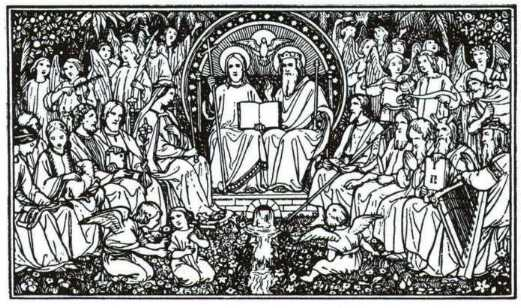
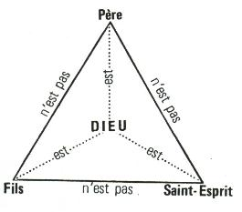
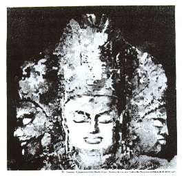

|
|
|
Titre
original de louvrage:
Gott und Sein Plan mit der Menschheit
Auteur:
Missionnaire Ewald Frank, Krefeld (Allemagne)
Copyright © 1985 by
Freie Volksmission e.V., Krefeld (Allemagne)
Traduit
de lallemand. Tout droit de reproduction,même partiel, est réservé.
Editeur
Centre Missionnaire de la Parole Parlée,
Case Postale 5633,
1002 Lausanne
Suisse
|
[RETOUR Table des matières]
DIEU
ET SON PLAN POUR LHUMANITE
Un exposé
du point de vue biblique
AVANT-PROPOS
Dans
cette brochure jai cherché à donner un court exposé
sur Dieu et Son plan à légard de lhumanité en me basant
sur lAncien et le Nouveau Testament. Pour cela jai dû mettre laccent
sur le thème de la divinité. Malheureusement nous ne pouvions
parfois prendre en considération que quelques passages bibliques appartenant
au thème traité. Le lecteur a cependant la possibilité
de sonder plus profondément les Saintes Ecritures, et cela jusquà
ce que la clarté nécessaire lui soit accordée par la
Vérité.
Ainsi,
de même que la plupart des Juifs nont pas compris le conseil de Dieu
établi par la Parole prophétique, de même la chrétienté
dans son ensemble a perdu la connaissance du conseil de Dieu. Lorsque le christianisme
devint une religion dEtat, une séparation se produisit entre les Juifs
et les Chrétiens. Les Chrétiens accusaient les Juifs davoir
mis à mort leur Messie, leur Sauveur; de leur côté, les
Juifs sélevaient contre la christianisation par la force. En séloignant
du judaïsme, les Chrétiens se distancèrent en même
temps de lAncien Testament et perdirent par cela même le fondement
véritable de la foi. Ils perdirent la connaissance que sans lAncien
Testament, on ne peut ni classer ni comprendre le Nouveau Testament. Cest
ainsi quon en arriva à une théologie détachée
de la Parole de Dieu, et par cela même sans fondement. Cest à
cette théologie que nous avons encore affaire aujourdhui.
Cette
situation ne peut être acceptée plus longtemps. Tout homme sincère
cherchant la Vérité a le droit dapprendre ce que Dieu dit dans
Sa Parole. En tout ce que le Seigneur Jésus fit et enseigna, Il se
rapporta à lAncien Testament et ouvrit à Ses disciples la compréhension
des Ecritures. De même les apôtres se référèrent
uniquement à lAncien Testament. Pour reconnaître Dieu et Ses
plans, on doit passer par le pont de la prophétie reliant lAncien
au Nouveau Testament.
Celui
qui écrit sur le sujet de la divinité saisit réellement
un fer brûlant car il est généralement connu que Dieu
est représenté et compris de manière diverse. Les uns
croient que Dieu est une seule Personne, les autres croient quIl est constitué
de deux Personnes, et un troisième groupe pense quIl consiste en trois
Personnes distinctes. Nous ne voulons pas aborder ici toutes les autres représentations
faites de Lui. Les images qui suivent montrent clairement, bien que partiellement,
la manière de voir humaine.
Tant
que les apôtres et les prophètes étaient présents,
aucune spéculation nexistait au sujet de Dieu. Ce nest que lorsquon
abandonna le fondement biblique pour donner le premier rang aux pensées
humaines que la direction du Saint-Esprit se perdit. La Pierre dachoppement
était Christ, et Elle lest encore aujourdhui. Les Unitariens se levèrent
qui, cest vrai, croyaient à un seul Dieu mais repoussaient la divinité
de Jésus-Christ. A lopposé se forma la doctrine de la trinité,
laquelle voit Dieu en trois Personnes. Malheureusement, après la Réformation,
les personnalités bien connues nont pas considéré ce
thème à fond. Jusquen notre temps ces représentations
traditionnelles furent reprises. Cest à lintensité des combats
menés par chacun des mouvements séparés que lon reconnaît
le prix quils attachaient à la connaissance de Dieu quils avaient
acquise.
Pour
une meilleure compréhension, nous avons employé ici et là
les mots hébraïques dElohim, de Jahwe et de Jahshua parce que
cela en fait davantage ressortir leur signification. Cependant la clarté
réelle ne vient finalement pas de lhébreu ou du grec mais seulement
par le Saint-Esprit, qui a aussi inspiré les prophètes et les
apôtres. Cest seulement ainsi que nous verrons ce quils ont vu, que
nous entendrons ce quils ont entendu, que nous comprendrons de la manière
quils ont compris.
Chacun
peut bien dire, en manière davertissement: Eprouvez les esprits!
mais en disant cela ils pensent aux autres. Cependant nous voulons donner
ici à tous la possibilité déprouver par la Parole les
dogmes vieux de plusieurs siècles. Sans en être conscients, aussi
bien ceux qui parlent que ceux qui écoutent apportent des interprétations
à la Parole de Dieu au lieu de prêcher la Parole originale. Ceux
qui nous ont apporté la Parole étaient des hommes envoyés
et mandatés par Dieu, mais ce sont des théologiens qui nous
ont donné les interprétations de cette Parole.
En
aucun cas nous ne voudrions par cet exposé causer de peine à
quelquun ou engager une polémique avec qui que ce soit. Il sagit
bien davantage de servir lensemble de lEglise du Dieu vivant. En plus de
cela, mon désir est de montrer aux Juifs qui ont placé leur
espérance dans le Dieu dIsraël et qui attendent leur Messie Quel
est ce Messie. Cest de Jérusalem que la Parole est sortie, et la même
Parole retournera de nouveau là-bas.
Puissent
tous les lecteurs de cette brochure être richement bénis.
Krefeld,
mai 1985
Lauteur
[RETOUR Table des matières]
|  |
|
Limage
ci-dessus est censée représenter le Père avec le sceptre, le Fils avec
la croix,
et le Saint-Esprit qui, sous la forme dune colombe, plane au-dessus de
lun et lautre.
|
Que voyez-vous sur ces images? Un Dieu ou
trois dieux?
|
|
|

|
|
Les trois personnes
ci-dessus doivent
également représenter
un seul Dieu
|
|
Dieu ne peut pas davantage
être mathématiquement
expliqué que concrétisé
|
|

|
|
Une
représentation de la trinité hindoue:
Brahmâ, le créateur;
Vishnu, le conservateur;
Shiva, le destructeur.
|
Les
représentations humaines de Dieu sont extrêmement anciennes. Elles remontent
à Nemrod et aux Babyloniens et, dune manière incompréhensible, elles furent
reprises plus tard par le christianisme sous une forme modifiée. Celui qui
reconnaît véritablement ce que ces images expriment du point de vue de lenseignement
comprendra pour quelle raison un éclaircissement fondé sur lEcriture devenait
dune urgente nécessité.
[RETOUR Table des matières]
LA
DIVINITE
Les
religions juive, chrétienne et musulmane sont appelées monothéistes,
ce qui signifie que leurs membres croient quil y a un seul Dieu. Cependant
chacune delles est parvenue à une connaissance de Dieu complètement
différente; leur enseignement et leur espérance contrastent
vivement de lune à lautre.
Comment
est-il possible que lon soit parvenu à un développement si
différent, alors que le point de départ doit avoir été
le même? Dieu ne sest-Il pas exprimé assez clairement? Le judaïsme,
en tant que porteur du témoignage de Dieu, na-t-il pas reconnu la
propre révélation de Dieu? Les chrétiens ont-ils mal
compris cette révélation et les musulmans lont-ils entièrement
rejetée? Dieu a rendu un témoignage universel de Lui-même.
Il faut cependant faire une nette différence entre le témoignage
des Ecritures donné avec une parfaite unanimité par lintermédiaire
de tous les prophètes de Dieu et ce que les scribes et les sages de
ce monde ont fait de ces Ecritures. Cest seulement ce que Dieu a dit dans
Sa Parole qui a de la valeur pour le véritable croyant. Ce que les
hommes disent de Lui et de Sa Parole a seulement produit les diverses religions.
Cependant le Seigneur veut se présenter à nous tel quIl est.
Dans
Esaïe 43.10,11 il est dit: Vous êtes mes témoins, dit
lEternel, vous et mon serviteur que jai choisi, afin que vous connaissiez,
et que vous me croyiez, et que vous compreniez que moi je suis le Même:
avant moi aucun Dieu na été formé, et après moi
il ny en aura pas. Moi, moi, je suis lEternel, et hors moi il ny en a point
qui sauve (Darby). Un véritable témoin doit avoir vu et
entendu quelque chose; il doit avoir été présent lorsque
la chose dont il veut rendre témoignage a eu lieu. Les prophètes
étaient ceux à qui la Parole vint; cest pour cela que Dieu
les employait: pour rendre témoignage de ce quils avaient vu, entendu
et vécu. En tant que collectivité, le peuple dIsraël est
appelé à être serviteur et témoin. Au travers dAbraham,
dIsaac et de Jacob, il a été élu pour porter le témoignage
que Dieu se rendait à Lui-même, ce témoignage étant
le bien le plus sacré de la foi. La tâche de léglise
est de témoigner de la propre révélation de Dieu, ainsi
que de la réalisation des plus grands mystères.
Il
est écrit de Jean-Baptiste dans Jean 1.6-8: Il y eut un homme envoyé
de Dieu; son nom était Jean. Celui-ci vint pour rendre témoignage,
pour rendre témoignage de la lumière, afin que tous crussent
par lui. Lui nétait pas la lumière, mais pour rendre témoignage
de la lumière (Darby). Le témoin le plus digne de foi était
le Seigneur Lui-même, car Il pouvait dire: Celui qui vient du ciel
est au-dessus de tous; et de ce quil a vu et entendu, de cela il rend témoignage;
et personne ne reçoit son témoignage. Celui qui a reçu
son témoignage, a scellé que Dieu est vrai
(Jean 3.31-33
Darby).
Presque
les mêmes paroles dites dans Esaïe 43 sont adressées aux
apôtres qui avaient été également des témoins
ayant vu et entendu les choses qui sétaient passées en ce temps-là:
et vous serez mes témoins à Jérusalem et dans toute
la Judée et la Samarie, et jusquau bout de la terre (Actes 1.8
Darby). Les apôtres ont aussi confirmé individuellement cette
réalité. Jean écrit dans 1 Jean 1.1,3: Ce qui était
dès le commencement, ce que nous avons entendu, ce que nous avons vu
de nos yeux, ce que nous avons contemplé et que nos mains ont touché,
concernant la parole de la vie
ce que nous avons vu et entendu, nous vous
lannonçons (Darby). Pierre dit dans 2 Pierre 1.16:
comme
ayant été témoins oculaires de sa majesté (Darby).
Chacun
devrait être subjugué par lharmonie qui existe entre lAncien
et le Nouveau Testament, ainsi que par la pleine unanimité des prophètes
et des apôtres. Toujours cest lunique et vrai Dieu qui parle, qui
opère et qui agit. Jean dit dans Apocalypse 1.2:
qui a rendu
témoignage de la parole de Dieu et du témoignage de Jésus-Christ,
de toutes les choses quil a vues (Darby). On ne trouve pas dans la bouche
des prophètes et des apôtres ces expressions: «Je crois
que
Je pense que
Je suppose que
Il se pourrait que
». Dans leurs
paroles et dans leurs témoignages se trouve une certitude absolue,
parce quils ont entendu, quils ont vu et ont pris part à ces choses.
Dans
cet exposé nous nallons pas nous occuper de ce que les savants théologiens
ont pu dire, écrire ou interpréter. Nous allons au contraire
nous occuper uniquement des Saintes Ecritures qui sont le seul fondement valable.
Laffirmation que personne ne peut comprendre la Bible nest pas juste.
Bien au contraire, la parole de 1 Corinthiens 2.14 est juste, qui dit: Or
lhomme ne reçoit pas les choses qui sont de lesprit de Dieu, car
elles lui sont folie; et il ne peut les connaître, parce quelles se
discernent spirituellement (Darby).
Les
véritables croyants sont conduits par lEsprit dans toute la Vérité
de la Parole, conformément à Jean 16.13 qui dit: Mais quand
celui-là, lEsprit de vérité, sera venu, il vous conduira
dans toute la vérité
(Darby). La parole de Romains 8.14
a encore toute sa valeur: Car tous ceux qui sont conduits par lEsprit
de Dieu, ceux-là sont fils de Dieu (Darby). Lesprit de lhomme
na aucun accès à cette dimension-là. Dans 1 Corinthiens
2.10, Paul écrit:
mais Dieu nous la révélée
par son Esprit; car lEsprit sonde toutes choses, même les choses profondes
de Dieu (Darby). Au travers de la Parole de Dieu, la sagesse mystérieuse
et cachée de Dieu nous est exposée (1 Cor. 2.7).
De
toute éternité Dieu qui, dans Son être, est Esprit (Jean
4.23), était caché dans Sa plénitude originelle. Il est
écrit dans 1 Timothée 6.16:
Lui qui seul possède
limmortalité, qui habite la lumière inaccessible, lequel aucun
des hommes na vu, ni ne peut voir
(Darby). Léternité
na jamais eu de commencement et à cause de cela elle naura non plus
pas de fin. Cest lorsque Dieu sortit de léternité que commença
le temps. Ce moment est appelé par la Bible: au commencement. Au
commencement Dieu sortit de Sa plénitude originelle invisible et prit
laspect dune forme visible dans un corps spirituel.
Il
est écrit dans Genèse 1.1: Au commencement Dieu créa
les cieux et la terre. Dieu créa premièrement le ciel et
tout ce qui sy trouve; ensuite Il fit la terre et la mer, et tout ce qui
sy trouve. Cette planète était dabord déserte et vide;
il ny avait sur la terre aucune lumière, aucune vie. Les ténèbres
recouvraient létendue des flots. Alors Dieu prononça la Parole
toute puissante: Que la lumière soit. Et la lumière fut.
Toutes choses vinrent à lexistence par la force de Sa Parole parlée,
car Sa Parole possède une puissance créatrice (Héb. 11.3).
La majesté de lunivers rend un puissant témoignage à
la grandeur de son Créateur.
Personne
ne devrait chercher à sonder Dieu par sa propre intelligence, ni
essayer de Le définir par une formulation de compréhension humaine.
Il est au-dessus de toute connaissance et Il est littéralement au-dessus
de toute compréhension. Il est écrit dans 1 Rois 8.27: Voici,
les cieux, et les cieux des cieux, ne peuvent te contenir (Segond). Dans
Esaïe 66.1 nous lisons ceci: Les cieux sont mon trône, et la
terre est le marchepied de mes pieds. Le Tout-Puissant remplit lunivers
sans fin; Il est présent partout. Il nest pas un Dieu caché,
inconnu et sans nom, mais au contraire dès le commencement Il sest
fait connaître aux hommes de diverses manières.
Dans
lAncien Testament nous rencontrons en premier lieu le mot hébreu Elohim,
qui a été traduit dans nos Bibles par le mot Dieu. Le
mot Elohim contient toutes les différentes qualités dans
lesquelles Dieu sest révélé: Créateur, Conservateur,
Sauveur et ainsi de suite. El, Elah ou Elohim servent à
désigner Dieu. Dans Genèse 14.18 Dieu se révèle
sous le nom de El Elyon, ce qui signifie Dieu le Très-Haut.
Le Seigneur Dieu sest présenté à Abraham comme El
Shaddaï (Gen. 17.1). Ce nom décrit Dieu comme Celui qui prend
soin, Celui qui fortifie, Celui qui est pleinement suffisant. Ce mot est répété
trente-et-une fois, seulement dans le livre de Job. Dans Genèse 21.33
nous trouvons le mot hébreu El Olam, qui signifie le Dieu éternel,
et dans Esaïe 9.6 (Darby) nous trouvons El Gibbor, qui signifie
Dieu puissant.
Cette
dernière désignation est dune extraordinaire importance, parce
quelle est un élément de la promesse du Sauveur et quelle
est une preuve irréfutable de Sa divinité. Car un enfant
nous est né, un fils nous a été donné, et le gouvernement
sera sur son épaule; et on appellera son nom: Merveilleux, Conseiller,
Dieu fort (en hébreu: El Gibbor), Père du siècle,
Prince de paix. Comme nous le verrons plus loin, le témoignage
uniforme que rendent Dieu et Ses prophètes est que Lui-même voulait
venir et voulait être Emmanuel, ce qui signifie: Dieu avec nous (Esaïe
7.14; Mat. 1.22,23).
En
rapport avec Elohim, le mot Jahwe (en hébreu: JHWH) est
aussi utilisé. Jahwe signifie Celui qui est éternellement,
Celui qui existe par Lui-même, et ce mot est rendu dans nos Bibles
par le mot Eternel.
Dans
le premier chapitre de la Genèse nous ne trouvons que la désignation
Elohim. Là se trouve relaté que Dieu a créé
lhomme à Son image, cest-à-dire quIl le créa en un
corps spirituel. Dans Genèse 2.4 nous rencontrons pour la première
fois lexpression lEternel Dieu. Il est employé en relation
avec les hommes formés de la poussière de la terre dans un corps
de chair.
Cependant
cest seulement au temps de Moïse, alors que Dieu devint réellement
un Sauveur quIl fit connaître ce Nom et révéla par là
sa signification: Et Dieu parla à Moïse, et lui dit:
Je suis lEternel (Jahwe). Je suis apparu à Abraham, à
Isaac, et à Jacob, comme le Dieu Tout-puissant (El Shaddaï); mais
je nai pas été connu deux par mon nom de lEternel (Elohim
Jahwe) (Ex. 6.2,3 Darby). Le prophète Moïse savait quElohim
sétait fait connaître dans une forme visible sous le nom
de Jahwe, et lorsquil écrivit la Thora, cest-à-dire
les cinq premiers livres de la Bible, il choisit toujours le mot juste pour
désigner Dieu. Cest conformément à la promesse que Dieu
avait faite à Abraham dans Genèse 15.13-16 que le peuple dIsraël
fut sauvé (Ex. 3.12). Cest pourquoi le nom de Jahwe est en
relation avec la libération dIsraël. Jahwe est le nom
dalliance de lEternel Dieu dans lAncien Testament. Cest en ce nom quIsraël
devait être béni (Nom. 6.22-27).
De
la même manière quElohim exprime chaque fois la diversité
de Dieu correspondant à Ses différentes relations, ainsi en
est-il avec le nom de Jahwe:
Jahwe-Jireh lEternel
pourvoira (Gen. 22.7-14);
Jahwe-Rapha lEternel qui me guérit (Ex. 15.26);
Jahwe-Nissi lEternel ma bannière (Ex. 17.8-15);
Jahwe-Schalom lEternel notre paix (Juges 6.24);
Jahwe-Tsidkenu lEternel notre justice (Jér. 23.6);
Jahwe-Shammah lEternel est ici (Ezé. 48.35);
Jahwe-Sabaoth lEternel des armées (1 Sam. 1.3).
Si
lon met ensemble ces sept expressions par lesquelles le Seigneur Dieu exprime
Ses attributs, on obtient une image complète de ce quIl est.
Jusquaujourdhui,
le peuple dIsraël nemploie dans ses prières que les expressions
Adonaï et Elohim. En cela ils se conforment bien à
la parole dAmos 6.10, où il est dit: Et il dira: Silence! car
nous ne pouvons faire mention du nom de lEternel (Jahwe) (Darby).
Adonaï signifie Seigneur, Maître, Souverain. Cette expression
est employée à diverses reprises dans le Nouveau Testament en
rapport avec Christ, par exemple dans Jean 13.13, Luc 6.46, etc. Cependant
avec le mot Adonaï il ny a aucune combinaison de nom comme cest
le cas avec Elohim et Jahwe. Dans Exode 4.10 nous trouvons dans le texte original:
Et Moïse dit à lEternel (Jahwe): Ah, Seigneur (Adonai)!
je ne suis pas un homme éloquent (Darby). Moïse était
bien conscient que Dieu lavait destiné à Son service, et cest
pourquoi il sadresse au Seigneur en Lui disant Adonaï. Cette
expression décrit les relations entre un Seigneur, un Souverain, et
ceux qui accomplissent Ses commandements et les ordres quIl leur confie.
Ce
nest pas Jahwe qui sest révélé comme Elohim, mais au
contraire cest Elohim qui sest fait connaître comme étant Jahwe.
Cest ainsi que Dieu agissait et marchait, quIl parlait et opérait
durant toute la période de lAncien Testament. Le Dieu Tout-puissant
nous rencontre en tant que Seigneur. Cest dune grande importance pour Sa
propre révélation dans le Nouveau Testament. Le Fils ne se
révèle pas comme Père, mais au contraire le Père
apparaît dans le Fils. Cest cela la révélation de Dieu.
Aucun
apôtre ou prophète na cru en une pluralité de personnes
au-dedans de la divinité. Au contraire ils ont mis laccent sur létat
de fait quil ny a quun seul Dieu. Cest Lui qui a fait écrire par
Moïse: Ecoute, Israël: LEternel, notre Dieu, est un seul Eternel.
Et tu aimeras lEternel, ton Dieu, de tout ton coeur, et de toute ton âme,
et de toute ta force (Deut. 6.4,5 Darby).
Les
paroles de Deutéronome 4.35-39 sont également un témoignage
clair: Cela ta été montré, afin que tu connusses
que lEternel est Dieu, et quil ny en a point dautre que lui. Des cieux,
il ta fait entendre sa voix pour tinstruire, et, sur la terre, il ta fait
voir son grand feu, et tu as entendu ses paroles du milieu du feu
Sache donc
aujourdhui, et médite en ton coeur, que lEternel est Dieu dans les
cieux en haut, et sur la terre en bas: il ny en a point dautre. Il
y a seulement un Dieu, cependant Il peut se révéler sur terre
et être en même temps dans le Ciel; Il peut faire retentir Sa
Voix du Ciel, et Lui-même se trouver malgré tout sur la montagne
du Sinaï.
Nous
lisons dans Néhémie 9.13: Et tu descendis sur la montagne
du Sinaï; et tu parlas avec eux depuis les cieux, et tu leur donnas des
ordonnances droites et des lois de vérité, de bons statuts et
de bons commandements (Darby). Ces passages de lEcriture se rapportent
aux événements qui eurent lieu lorsque la loi leur fut donnée.
Le Seigneur était descendu sur la montagne, dans le feu, et Il leur
parlait dune voix puissante. Le peuple était un témoin oculaire
de ces événements, et il seffraya. Et tout le peuple aperçut
les tonnerres, et les flammes, et le son de la trompette, et la montagne fumante;
et le peuple vit cela, et ils tremblèrent et se tinrent loin, et dirent
à Moïse: Toi, parle avec nous et nous écouterons; mais
que Dieu ne parle point avec nous, de peur que nous ne mourions (Ex.
20.18,19 Darby).
[RETOUR Table des matières]
LE
SEIGNEUR DANS UNE FORME DANGE
Il
nous est rapporté de Moïse que lAnge de lEternel lui est apparu
comme une flamme de feu et que Sa voix retentissait du milieu dun buisson
dépines (Ex. 3.2 Darby). Nous lisons au verset 4: Et lEternel
(Jahwe) vit quil se détournait pour voir; et Dieu (Elohim)
lappela du milieu du buisson et dit: Moïse! Moïse! Et il dit: Me
voici. Et il dit: Napproche pas dici; ôte tes sandales de tes pieds,
car le lieu sur lequel tu te tiens est une terre sainte. Et il dit: Je suis
le Dieu de ton père, le Dieu dAbraham, le Dieu dIsaac, et le Dieu
de Jacob. Et Moïse cacha son visage, car il craignait de regarder Dieu.
Dans
ce récit, il est aussi bien parlé de Dieu que de lEternel
et de lAnge de lEternel. Cependant il ne sagit pas ici de trois
personnes, mais bien de trois différentes désignations pour
une seule et même Personne. LAnge du Seigneur est lapparition visible
de Dieu dans une forme dAnge. Cest ainsi quIl marchait dans le jardin dEden
et parlait avec Adam et Eve; cest ainsi quIl a rencontré Abraham
dans Genèse 18 lorsquIl le visita en compagnie de deux anges. Il est
dit littéralement ceci à cette occasion: Et lEternel (Jahwe)
lui apparut auprès des chênes de Mamré; et il était
assis à lentrée de la tente, pendant la chaleur du jour. Abraham
a même lavé les pieds du Seigneur et a fait préparer un
repas à ses visiteurs de haut rang. Les deux anges, qui avaient également
une apparence humaine, se rendirent à Sodome (chapitre 19.1), mais
le Seigneur demeura auprès dAbraham et eut avec lui une plus longue
conversation.
Nous
lisons dans Exode 33.9,11: Et il arriva que, comme Moïse entrait
dans la tente, la colonne de nuée descendit, et se tint à lentrée
de la tente, et lEternel parla avec Moïse
Et lEternel parlait à
Moïse face à face, comme un homme parle avec son ami (Darby).
Moïse exprimait ses demandes particulières, disant: Et maintenant,
je te prie, si jai trouvé grâce à tes yeux, fais-moi
connaître, je te prie, ton chemin, et je te connaîtrai, afin que
je trouve grâce à tes yeux: et considère que cette nation
est ton peuple. Et lEternel dit: Ma face ira, et je te donnerai du repos.
Et Moïse lui dit: Si ta face ne vient pas, ne nous fais pas monter ici
(Ex. 33.13-15 Darby).
Dans
Exode 23.20,21 le Seigneur dit: Voici, jenvoie un ange devant toi, pour
te garder dans le chemin, et pour tamener au lieu que jai préparé.
Prends garde à toi à cause de sa présence, et écoute
sa voix; ne lirrite pas; car il ne pardonnera point votre transgression,
car mon nom est en lui (Je suis personnellement en lui) (Darby).
Extérieurement les gens voyaient la forme dun Ange, cependant dans
cette forme le Seigneur Dieu était personnellement présent,
comme Il la dit Lui-même.
Dans
la Parole prophétique, lorsque le Seigneur apparaît sous une
forme visible, Il est aussi appelé lAnge de Sa face. Il est écrit
dans Esaïe 63.9: Dans toutes leurs détresses, il a été
en détresse, et lAnge de sa face les a sauvés; dans son amour
et dans sa miséricorde il les a rachetés, et il sest chargé
deux, et il les a portés tous les jours dautrefois (Darby).
Dans le dernier prophète de lAncien Testament, Malachie 3.1, il est
dit:
et lAnge de lalliance en qui vous prenez plaisir, voici, il vient,
dit lEternel des armées (Darby).
Le
fait que du temps de lAncien Testament Dieu apparaissait sous la forme visible
dun Ange est dune grande importance pour Sa révélation personnelle
dans une forme humaine. Ce qui arriva à Jacob, le père des douze
tribus dIsraël, doit nous servir également de témoignage.
Il est écrit de lui:
et par sa force il lutta avec Dieu; oui,
il lutta avec lAnge et prévalut: Il pleura et le supplia. A Béthel,
il le trouva; et là, il parla avec nous: et lEternel, le Dieu des
armées, lEternel, est son mémorial (Osée 12.4-6
Darby). Dans ce texte il est de nouveau parlé de lAnge de lEternel,
et de Dieu, et cependant il sagit là seulement de lUnique,
qui se révèle de diverses manières et demeure toutefois
le Même.
Nous
trouvons la description détaillée de cet événement
dans Genèse 32, depuis le verset 24. Cet Ange y est décrit comme
un homme qui combattit avec Jacob et le frappa fortement à la
hanche: Et Jacob resta seul; et un homme lutta avec lui jusquau lever
de laurore. Et lorsquil vit quil ne prévalait pas sur lui, il toucha
lemboîture de sa hanche; et lemboîture de la hanche de Jacob
fut luxée, comme il luttait avec lui. Et il dit: Laisse-moi aller,
car laurore se lève. Et il dit: Je ne te laisserai point aller sans
que tu ne maies béni. Et il lui dit: Quel est ton nom? Et il dit:
Jacob. Et il dit: Ton nom ne sera plus appelé Jacob, mais Israël
(celui qui lutte avec Dieu): car tu as lutté avec Dieu et avec
les hommes, et tu as prévalu. Et Jacob demanda, et dit: Je te prie,
déclare-moi ton nom. Et il dit: Pourquoi demandes-tu mon nom? Et il
le bénit là. Et Jacob appela le nom du lieu Péniel (face
de Dieu): Car jai vu Dieu face à face, et mon âme a été
délivrée (Darby).
Cet
événement semble presque trop humain. Cependant cest précisément
en cela que consiste la grandeur et lélévation du Tout-Puissant
qui, bien quomniprésent, ait voulu se révéler aux hommes
dune manière qui leur soit compréhensible. Avant de mourir,
Jacob bénit les deux fils de Joseph en croisant les bras et dit: Que
le Dieu devant la face duquel ont marché mes pères, Abraham
et Isaac, le Dieu qui a été mon berger depuis que je suis jusquà
ce jour, lAnge qui ma délivré de tout mal, bénisse
ces jeunes hommes; et quils soient appelés de mon nom et du nom de
mes pères, Abraham et Isaac, et quils croissent pour être une
multitude au milieu du pays (Gen. 45.15,16 Darby).
Nous
lisons dans Exode 24, depuis le verset 9: Et Moïse et Aaron, Nadab
et Abihu, et soixante-dix des anciens dIsraël montèrent; et ils
virent le Dieu dIsraël et sous ses pieds comme un ouvrage de saphir
transparent, et comme le ciel même en pureté. Et il ne porta
point sa main sur les nobles dentre les fils dIsraël: ils virent Dieu,
et ils mangèrent et burent (Darby). Aucun homme ne pouvait voir
Dieu dans sa plénitude originelle, en tant quEsprit. Il ne fut vu
quaprès être entré dans Son corps spirituel. Les soixante-dix
anciens, et dautres le virent dans Sa gloire. Le prophète Ezéchiel
rapporte ceci au premier chapitre et au verset 26: Et au-dessus de létendue
qui était sur leurs têtes, il y avait comme laspect dune pierre
de saphir, la ressemblance dun trône; et, sur la ressemblance du trône,
une ressemblance comme laspect dun homme, dessus, en haut (Darby).
Il ny a aucun passage de lEcriture où lon puisse voir trois personnes
sur le trône. On ne trouve pas davantage dans la Bible les expressions
un Dieu en trois ou trinité. Aucun prophète ou apôtre
na interprété même un seul passage des Saintes Ecritures
dans le sens que Dieu consisterait en plusieurs personnes.
[RETOUR Table des matières]
UNE
PAROLE DECLAIRCISSEMENT
A
la lumière de ce que nous venons dexposer, nous pouvons reconnaître
à qui Dieu parle lors de la création lorsquIl dit: Faisons
lhomme à notre image
(Gen 1.26 Darby). Les Saintes Ecritures
ont aussi une réponse clarifiante et catégorique à ce
sujet. Dans Job 38.4-7, le Seigneur demande à Son serviteur: Où
étais-tu quand jai (non pas: nous) fondé la terre? Déclare-le
moi, si tu as de lintelligence. Qui lui a établi sa mesure, si tu
le sais? Ou qui a étendu le cordeau sur elle? Sur quoi ses bases sont-elles
assises, ou qui a placé sa pierre angulaire, quand les étoiles
du matin chantaient ensemble, et que tous les fils de Dieu éclataient
de joie? (Darby). Voilà qui ne peut être dit plus
clairement. Lorsque le Seigneur Dieu créa la terre, les armées
célestes chantaient ensemble et les anges éclataient
de joie. Ainsi Dieu nétait pas seul; Il na parlé ni à
Lui-même ni à un autre Dieu, car il ny en avait point dautre.
Mais cest aux anges qui lentouraient quIl a parlé.
Dans
Genèse 11.7 le Seigneur dit: Allons, descendons, et confondons
là leur langage, afin quils nentendent pas le langage lun de lautre
(Darby). Il avait été dit au verset 5: Et lEternel
descendit
. Chaque fois le Seigneur est vu environné des armées
célestes. Le prophète Michée rend ce témoignage:
Jai vu lEternel assis sur son trône, et toute larmée des
cieux se tenant à sa droite et à sa gauche (2 Chr. 18.18
Darby). Là également, le Seigneur a parlé aux anges
qui Lenvironnaient.
Esaïe
rend compte dun événement semblable: Je vis le Seigneur
assis sur un trône haut et élevé, et les pans de sa robe
remplissaient le temple. Des séraphins se tenaient au-dessus de lui;
ils avaient chacun six ailes: de deux ils se couvraient la face, et de deux
ils se couvraient les pieds, et de deux ils volaient. Et lun criait à
lautre, et disait: Saint, saint, saint, est lEternel des armées;
toute la terre est pleine de sa gloire! (Es. 6.1-3 Darby). Il y a une
différence entre les anges qui prennent une forme humaine, et les chérubins
et les séraphins. Là, les chérubins et les séraphins
planaient au-dessus du Seigneur, alors que les anges se tiennent debout devant
Lui. Nous lisons au verset 8: Et jentendis la voix du Seigneur qui disait:
Qui enverrai-je, et qui ira pour nous?. Là aussi, le Seigneur
parlait aux armées célestes présentes.
Dieu
Sest révélé aux hommes qui croyaient en Lui. Ils recevaient
Ses promesses et étaient au clair à Son égard. Pas plus
les prophètes de lAncien Testament que les apôtres du Nouveau
Testament nont jamais entamé une discussion au sujet de Dieu. Ce nest
quau troisième siècle après Christ, lorsque les philosophies
grecques et les idées romaines quil y a plusieurs dieux eurent été
reçues dans le christianisme, après quelles eurent été
enseignées par les érudits sur la base de leurs représentations
traditionnelles et que leurs pensées furent exposées, cest
alors que surgit la doctrine de la trinité. Cest sur cela que la
théologie actuelle des églises officielles ou indépendantes
est bâtie, et non sur le témoignage originel des prophètes
et des apôtres, comme on le croit généralement dune manière
erronée. La connaissance de Dieu falsifiée est considérée
généralement comme juste, et la véritable connaissance
de Dieu est rejetée comme fausse. Dieu nest pas tel que nous Le
faisons, mais bien tel quIl est. Les hommes font plusieurs dieux, toutefois
le Seigneur demeure Dieu, le même hier, aujourdhui et éternellement
(Ps. 102.26-28; Es. 48.12; Héb. 13.8).
Dieu
ne sest pas davantage multiplié quIl na changé. Aucun Juif
ne pourrait arriver à lidée dune trinité; cest tout
simplement exclu parce quune telle chose ne peut se trouver dans le témoignage
entier des Saintes Ecritures. Dieu se présente bien à nous dans
Sa diversité, mais chaque fois, la façon quIl a de Se révéler
est en relation avec la réalisation de Son plan.
[RETOUR Table des matières]
LA
TRANSITION
En
ce qui concerne le thème de la divinité, le Nouveau Testament
réserve aux hommes des difficultés sensiblement plus grandes
que lAncien. Cela vient de ce quaujourdhui nous avons affaire à
lhéritage dune pensée théologique tout à fait
antibiblique Même au concile de Nicée, en 325, il ny avait encore
aucune discussion sur une trinité. Il est connu de tout historien de
lEglise quà cette occasion il était question de la divinité
de Jésus-Christ, doctrine quAthanase défendait clairement,
par opposition à celle dAnus. Les diverses formulations de la trinité
sont le produit de lentendement et elles sont basées sur un malentendu
total. Non seulement les paroles des prophètes et des apôtres
nont pas été prises en considération à ce sujet,
mais également les déclarations des hommes de Dieu qui ont suivi
les temps apostoliques. La doctrine de la trinité provient dune époque
de la pensée philosophico-théologique. On commandait à
sa propre raison, disant: «Tu dois voir les trois Personnes comme étant
un seul Dieu!». Néanmoins on nen voyait pas quun seul mais
trois, et cest ainsi quon passa du monothéisme au trinitarisme.
La
vision de lhistoire du salut, présentant un Dieu qui sabaisse et
qui en tant que Parole (le Logos), agit jusquà ce quIl se fasse connaître
sous une forme corporelle, fut perdue (Jean 1.1,14). Dieu avait parlé
au travers des prophètes, cependant lorsquIl parla dans le Fils, ce
nétait plus pour annoncer encore une autre promesse, mais cétait
la réponse, le résultat. A qui une apparence de connaissance
spéculative peut-elle bien être utile? Mais il sagit bien là
de la plus grande et de la plus sainte révélation. Celui qui
se tient au-dessus de tout ce qui est temporel entra dans lhistoire, et ainsi
la Parole qui était au commencement devint chair et habita au milieu
de nous (Jean 1.1,14). La lumière vint et un nouveau jour commença:
le jour du salut (Es. 49.8; 2 Cor. 6.2). Le soleil de la justice se levait;
une vie nouvelle, réalisée par lEsprit, en sortait. Cétait
une intervention divine dans lhistoire de lhumanité. En fait nous
avons affaire à la révélation de Dieu et à lunité
de Son être. Cest seulement sil est vrai que Dieu Lui-même
était en Christ quil est vrai que Dieu Lui-même nous a réconciliés
avec Lui (2 Cor. 5.19).
Un
historien écrit ceci sur Athanase, le docteur de lEglise, lequel se
rapporte à Irénée: «La pensée dAthanase
est décisive lorsquil dit quen Jésus, Dieu Lui-même
nous est apparu, que Dieu Lui-même sest fait connaître à
nous et nous a rachetés, que nous avons le Père même en
Lui». Ajoutons une citation de Luther: «Le réconciliateur
doit être Dieu Lui-même parce que, pour que nous soyons arrachés
à notre horrible chute dans le péché et à la mort
éternelle, aucun autre moyen ne pouvait nous venir en aide, si ce nest
au travers dune Personne éternelle qui ait pouvoir sur le péché
et la mort et puisse nous en racheter, et à la place nous donner la
justice et la Vie éternelle. Aucun ange ou aucune autre créature
ne pouvait le faire, mais il fallait bien que ce fût Dieu Lui-même».
La doctrine tout à fait anti-biblique de la «tri-unité»
devint un grand obstacle pour les Juifs et les Musulmans. Au lieu de voir
la révélation du Père, Fils et Saint-Esprit de manière
successive, on les présenta lun à côté de lautre.
Le
fait que lAncien et le Nouveau Testament doivent pleinement concorder et
quaucune contradiction ne peut sy trouver devrait éclairer toute
personne craignant Dieu. La prophétie et son accomplissement doivent
être en parfait accord, et ils le sont. Ainsi, aussi bien lAncien
que le Nouveau Testament rendent témoignage du fait que Lui qui était
en forme de Dieu est entré pleinement dans un être humain.
Conformément
à Genèse 1.26-28, Adam a été créé
à limage de Dieu, cest-à-dire dans un corps spirituel. Ce
nest que plus tard, au chapitre deux, verset 7, que le Seigneur Dieu lui
forma un corps charnel terrestre. Après cela, dAdam il tira Eve. Parce
que lhomme était tombé, dans ce corps de chair, il fallait
que Dieu vînt dans un corps de chair. Christ était le dernier
Adam (1 Cor. 15.45). A Golgotha Son côté fut ouvert et par laction
du rachat Son Epouse fut tirée de Lui. Elle est chair de sa chair
(Eph. 50.30). Lhomme devait être rendu divin et cest pourquoi Dieu
devint homme quant à la chair, mais quant à lEsprit Il resta
Dieu. Seul Lui-même pouvait ramener les hommes à leur position
divine.
Quil
ny ait quun seul Dieu, le Nouveau Testament nous en rend aussi bien témoignage
que lAncien. Et Jésus lui répondit: le premier de tous
les commandements est: Ecoute, Israël, le Seigneur notre Dieu est un
seul Seigneur; et tu aimeras le Seigneur ton Dieu de tout ton coeur, de toute
ton âme, et de toute ta pensée, et de toute ta force (Marc
12.29,30 Darby). Nous trouvons dans Romains 3.30:
puisque cest un
seul Dieu qui justifiera la circoncision sur le principe de la foi et lincirconcision
par la foi. Il est écrit dans lépître de Jude, au
verset 25:
au seul Dieu, notre Sauveur, par notre Seigneur Jésus-Christ,
gloire, majesté, force et pouvoir, dès avant tout siècle,
et maintenant, et pour tous les siècles! Amen.
Avant
dentrer de façon détaillée dans les différentes
sphères où notre Seigneur a exercé Son ministère
dans Sa diversité, nous devons encore une fois mettre laccent sur
Sa divinité telle que nous la montre le Nouveau Testament. Romains
9.4,5 rend témoignage que le Messie est Dieu:
qui sont Israélites,
auxquels sont ladoption, et la gloire, et les alliances, et le don de la
loi, et le service divin, et les promesses; auxquels sont les pères,
et desquels, selon la chair, est issu le Christ, qui est sur toutes choses
Dieu béni éternellement. Amen! (Darby). Lapôtre
Jean sexprime ainsi: Or nous savons que le Fils de Dieu est venu, et
nous a donné lintelligence afin que nous connaissions le Véritable,
et nous sommes dans le Véritable, savoir dans son Fils Jésus-Christ:
Lui est le Dieu véritable et la vie éternelle (1 Jean 5.20
Darby).
Paul
rend un témoignage convaincant lorsquil dit ceci: Et, sans contredit,
le mystère de la piété est grand: Dieu a été
manifesté en chair, a été justifié en Esprit,
a été vu des anges, a été prêché
parmi les nations, a été cru au monde, a été élevé
dans la gloire (1 Tim. 3.16 Darby). Le témoignage unanime des
prophètes et des apôtres ne peut pas être ignoré,
pas plus quil ne peut être mis de côté. Paul écrit
aux Colossiens:
afin que leurs coeurs soient consolés, étant
unis ensemble dans lamour et pour toutes les richesses de la pleine certitude
dintelligence, pour la connaissance du mystère de Dieu, dans lequel
sont cachés tous les trésors de la sagesse et de la connaissance
(Col. 2.2,3 Darby). La divinité de Jésus-Christ est le
fondement de notre foi et la condition absolue pour notre rédemption.
[RETOUR Table des matières]
LE
CREATEUR
Les
désignations employées dans lAncien Testament à légard
de Dieu sont également employées à légard du
Seigneur dans le Nouveau Testament: Rédempteur, Roi, Berger, et ainsi
de suite. Le Seigneur Jésus est même placé en rapport
avec la création. Nous lisons dans Jean 1.10:
et le monde fut
fait par lui; et le monde ne la pas connu (Darby). Dans Colossiens 1.16,17
il est écrit:
car par lui ont été créées
toutes choses, les choses qui sont dans les cieux et les choses qui sont sur
la terre, les visibles et les invisibles, soit trônes, ou seigneuries,
ou principautés, ou autorités: toutes choses ont été
créées par lui et pour lui; et lui est avant que toutes choses,
et toutes choses subsistent par lui (Darby). Il ressort du contexte
que ces passages bibliques se rapportent bien à Jésus-Christ.
Nous
trouvons dans 1 Corinthiens 8.6:
toutefois, pour nous, il y a un seul
Dieu, le Père, duquel sont toutes choses, et nous pour lui, et un seul
Seigneur, Jésus-Christ, par lequel sont toutes choses, et nous par
lui (Darby). Dans ce verset le Fils est désigné
tel quIl est, cest-à-dire comme le Seigneur.
Par
Dieu le Père, toutes choses sont venues à lexistence, et par
le moyen de Jésus-Christ également. Au travers de qui sont-elles
donc parvenues à lexistence? Avons-nous deux Créateurs? Certainement
pas. Il ny a quun seul Créateur. Il est Dieu, et en tant que Père
Il sest révélé dans le Fils, et le Fils est Seigneur,
et par cela le même Dieu.
Dans
le livre prophétique du Nouveau Testament, Il est de nouveau le Seigneur
Dieu. Apocalypse 4.11: Tu es digne, notre Seigneur et notre Dieu, de recevoir
la gloire, et lhonneur, et la puissance; car cest toi qui as créé
toutes choses, et cest à cause de ta volonté quelles étaient,
et quelles furent créées (Darby).
[RETOUR Table des matières]
LE
JE SUIS
Dans
Jean 8.24 il est écrit: Je vous ai donc dit que vous mourrez dans
vos péchés; car si vous ne croyez pas que cest moi, vous mourrez
dans vos péchés (Darby). La désignation JE
SUIS a déjà depuis les jours de Moïse une signification
particulière. Et Moïse dit à Dieu: Voici, quand je
viendrai vers les fils dIsraël, et que je leur dirai: Le Dieu de vos
pères ma envoyé vers vous, et quils me diront: Quel est son
nom? que leur dirai-je? Et Dieu dit à Moïse: JE SUIS CELUI QUI
SUIS. Et il dit: Tu diras ainsi aux fils dIsraël; JE SUIS ma envoyé
vers vous (Ex. 3.13,14 Darby).
Notre
Seigneur a répété ces paroles de lAncien Testament dans
le Nouveau en se rapportant à Lui-même. Il dit: JE SUIS le chemin,
la Vérité et la Vie. JE SUIS la résurrection. JE SUIS
le Pain de la vie. JE SUIS la Lumière du monde, et ainsi de suite.
Nous rencontrons constamment ces mêmes expressions. Dans Jean 8.57 il
est écrit: Les Juifs donc lui dirent: Tu nas pas encore cinquante
ans, et tu as vu Abraham! Jésus leur dit: En vérité,
en vérité, je vous dis: Avant quAbraham fût, JE SUIS
(Darby). Cétait donc JE SUIS qui, en tant que Jahwe, parla avec
Abraham.
Dans
Esaïe 44.6b le Seigneur dit: JE SUIS le premier, et JE SUIS le dernier;
et hors moi il ny a pas de Dieu (Darby). Nous trouvons une parole semblable
dans Esaïe 48.12b: Moi, JE SUIS le Même, moi, le premier, moi,
le dernier (Darby). La même expression se retrouve dans le Nouveau
Testament: Ne crains point; moi, JE SUIS le premier et le dernier, et
le vivant; et jai été mort; et voici, JE SUIS vivant aux siècles
des siècles
(Apoc. 1.17,18 Darby). Il ressort clairement de
ces paroles de QUI il est question ici.
Jahwe
dit dans lAncien Testament: JE SUIS le premier et le dernier
et
Jésus dit dans le Nouveau Testament: JE SUIS le premier et le dernier
.
Dans Apocalypse 1.8, Il est de nouveau le Seigneur Dieu: Moi, JE SUIS
lalpha et loméga, dit le Seigneur Dieu, celui qui est, et qui était,
et qui vient, le Tout-puissant. Il est vraiment merveilleux de suivre
la démonstration de la Parole. Jahwe de lAncien Testament est Jésus
du Nouveau Testament, et Il demeure toujours le Même. Le témoignage
quIl donne de Lui-même dans Apocalypse 1.8 est dun poids tout particulier.
Bienheureux celui qui peut croire comme lEcriture le dit. Dieu na pas du
tout la pensée de faire écrire une nouvelle Bible. Il dirait
aujourdhui ce quIl a toujours dit; Il na pas besoin den corriger quoi
que ce soit.
[RETOUR Table des matières]
LE
ROI
Certes,
aucun lecteur de la Bible ne peut ignorer combien de fois le Seigneur Dieu
est appelé dans lAncien Testament le Roi. David sécrie au
psaume 5.2: Sois attentif à la voix de ma supplication, mon Roi
et mon Dieu! car cest toi que je prie (Darby). Le prophète Jérémie
dit: Mais lEternel Dieu est vérité, lui est le Dieu vivant
et le Roi déternité
(Jér. 10.10 Darby). Le prophète
Esaïe lexprime par les paroles suivantes: Ainsi dit lEternel, le
roi dIsraël et son rédempteur, lEternel des armées
(Esa. 44.6 Darby). Nous trouvons dans Zacharie 9.9: Réjouis-toi
avec transports, fille de Sion; pousse des cris de joie, fille de Jérusalem!
Voici, ton roi vient à toi; il est juste et ayant le salut, humble
et monté sur un âne, et sur un poulain, le petit dune ânesse
(Darby).
Cest
une promesse prophétique qui sest littéralement accomplie dans
le Nouveau Testament. Nous lisons à cet égard Matthieu 21.1-4:
alors Jésus envoya deux disciples, leur disant: Allez au village
qui est vis-à-vis de vous, et aussitôt vous trouverez une ânesse
attachée, et un ânon avec elle; détachez-les et amenez-les
moi. Et si quelquun vous dit quelque chose, vous direz: Le Seigneur en a
besoin; et aussitôt il les enverra. Et tout cela arriva, afin que fût
accompli ce qui avait été dit par le prophète
(Darby).
La foule fut transportée de joie, étendit ses vêtements
sur la route, arracha des branches darbres pour en orner le chemin, et fit
tout cela parce que le Roi faisait Son entrée dans Jérusalem.
Ils criaient: Hosanna au Fils de David! Béni soit celui
qui vient au nom du Seigneur! Hosanna dans les lieux très hauts! (Mat.
21.9 Darby).
Après
que le Seigneur soit né, des sages vinrent de lOrient à Jérusalem
et demandèrent: Où est le roi des Juifs qui vient de naître?
car nous avons vu son étoile en Orient, et nous sommes venus pour ladorer
(Mat. 2.2 Segond). Après son arrestation on demanda à
notre Seigneur: Toi, tu es le roi des Juifs?. A la fin de linterrogatoire,
Pilate arriva à cette conclusion: Tu es donc roi? Jésus
répondit: Tu le dis que moi je suis roi. Moi, je suis né pour
ceci, et cest pour ceci que je suis venu dans le monde, afin de rendre témoignage
à la vérité. Quiconque est de la vérité,
écoute ma voix (Jean 18.33,37 Darby).
Dans
lAncien Testament le Seigneur Dieu était désigné comme
étant le Roi; de même, dans le Nouveau Testament, Jésus-Christ
a été décrit comme étant le Roi. Paul résume
cela par les paroles suivantes: Or, quau roi des siècles, lincorruptible,
invisible, seul Dieu, soit honneur et gloire aux siècles des siècles!
Amen (1 Tim. 1.17 Darby). Oh, quelle profondeur de la sagesse et de
la connaissance de Dieu! Ce nest quau travers de la révélation
que nous pouvons voir la diversité dans laquelle Dieu se fait connaître
à nous. Seul celui qui croit, conformément à la Bible,
que Dieu sest révélé en Christ peut amener tous les
passages bibliques au même dénominateur.
Létablissement
de la royauté est encore à venir. Cependant cet événement
est aussi déjà annoncé dans la parole prophétique.
Chantez Dieu, chantez; chantez à notre roi, chantez; car
Dieu est le roi de toute la terre; chantez avec intelligence. Dieu règne
sur les nations, Dieu est assis sur le trône de sa sainteté
(Ps. 47.6-8 Darby). Nous trouvons également ces paroles dans
le psaume 96.9 et suivants: Adorez lEternel en sainte magnificence; tremblez
devant lui, toute la terre. Dites parmi les nations: lEternel règne!
Aussi le monde est affermi, il ne sera pas ébranlé. Il exercera
le jugement sur les peuples avec droiture. Que les cieux se réjouissent,
et que la terre ségaie
.
Apocalypse
11.17 appartient à ce même contexte. Nous te rendons grâce,
Seigneur, Dieu, Tout-puissant, celui qui est et qui était, de ce que
tu as pris ta grande puissance et de ce que tu es entré dans ton règne
(Darby). Dans Matthieu 25.31,32 il est dit ceci: Or, quand le fils
de lhomme viendra dans sa gloire, et tous les anges avec lui, alors il sassiéra
sur le trône de sa gloire, et toutes les nations seront assemblées
devant lui
(Darby). Il est dit dans Zacharie 14.9: Et lEternel
sera roi sur toute la terre. En ce jour-là, il y aura un Eternel, et
son nom sera un (Darby). Dans le même contexte nous trouvons
Apocalypse 15.3: Grandes et merveilleuses sont tes oeuvres, Seigneur,
Dieu, Tout-puissant! Justes et véritables sont tes voies, ô Roi
des nations! (Darby). Ces passages bibliques devraient nous suffire
pour montrer que lun et lautre, le Seigneur Dieu et le Seigneur Jésus-Christ,
sont décrits pareillement comme étant le Roi. Sil nen était
pas ainsi, que Jahwe et Jahshua soient Le Même, alors nous aurions affaire
à deux rois différents.
[RETOUR Table des matières]
LE
JUGE
Beaucoup
de passages des Ecritures témoignent que Dieu est aussi le Juge. Le
psaume 7.10 dit: Dieu est un juste juge (Darby). Le psaume 50.6 dit:
car Dieu lui-même est juge (Darby). Le psaume 58.11 dit:
certainement il y a un Dieu qui juge sur la terre (Darby). La parole
dEsaïe 33.22 est particulièrement instructive: Car lEternel
est notre juge, lEternel est notre législateur, lEternel est notre
roi; lui nous sauvera (Darby). Le Même qui a édicté
la loi jugera conformément à Sa loi. Jacques exprime la même
chose dans le Nouveau Testament: Un seul est législateur et juge,
celui qui peut sauver et détruire (Jacq. 4.12 Darby). Le prophète
Jérémie déclare le Seigneur comme étant également
le Juge. Et toi, Eternel des armées, qui juges justement
(Jér.
11.20 Darby). A la fin de sa carrière, Paul pouvait dire:
désormais
mest réservée la couronne de justice que le Seigneur juste
juge me donnera dans ce jour-là
(2 Tim. 4.8 Darby). Il est
écrit dans Jean 5.22: Car aussi le Père ne juge personne,
mais il a donné tout le jugement au Fils (Darby).
Au
chapitre dix des Actes des apôtres, Pierre présente en peu de
mots au centenier Corneille et à ceux qui se trouvent dans sa maison
le plan du salut de Dieu. Conformément à sa prédication,
Jésus a été établi par Dieu Juge des vivants et
des morts (verset 42). Il est écrit dans Hébreux 12.23: Mais
vous vous êtes approchés
de lassemblée des premiers-nés
inscrits dans les cieux, du juge qui est le Dieu de tous
(Segond). Ici
également nous pourrions de nouveau demander: qui donc alors sera Juge?
Sera-ce Dieu ou le Seigneur Jésus? Certainement quun seul sera Juge,
cest-à-dire Celui qui a donné la loi. Quon Lappelle Dieu
ou Père, Seigneur ou Fils, cest égal; il sagit toujours de
lUnique. Les comparaisons et parallèles pourraient être poursuivis
à volonté.
[RETOUR Table des matières]
LINTERRUPTION
Malheureusement,
dans son ensemble lhumanité na pas compris ce que Dieu veut, ni comment
Il réalise Son plan. Le dessein de Dieu consiste en ce quIl veut
avoir pour léternité des fils et des filles vivant en communion
avec Lui. Cest pour cette vocation élevée que lhomme a
été créé à son image. Il était le
couronnement de Son oeuvre de création; cest à lui que fut
donnée la responsabilité dexercer la domination sur la terre
entière.
Lhomme
na pas été fait pour être un automate, mais au contraire
il a reçu le libre arbitre, avec la faculté daimer, de ressentir,
de décider, etc. Cependant le principe de lobéissance devait
être appliqué; cest-à-dire que lhomme devait exercer
son pouvoir dans la dépendance du Dieu Tout-puissant. Lhomme fut soumis
à une épreuve au cours de laquelle il devait prendre librement
sa décision. Le Seigneur lui donna un ordre facile à accomplir
(Gen. 2.15-17). On ne peut mieux se représenter la chose quen considérant
que garder ce commandement aurait été une affaire dhonneur.
Cependant lhomme refusa, se rendit autonome et perdit sa dépendance
à légard de Dieu. Par cela fut détruite la pleine
harmonie existant entre lui et son Créateur, et il fut séparé
de Lui.
Il
ne nous est pas relaté combien de temps a duré cette communion
sans mélange avec Dieu. En tout cas, avant la chute dans le péché,
il ny avait pas de peine, pas de larmes, pas de douleur, pas de maladie,
pas de mort. Cest parce que nous avons été destinés
à vivre sans laccompagnement de tous ces phénomènes
que nous aspirons à être replacés dans notre état
originel.
Selon
Esaïe 14.12-15 il y eut premièrement un archange qui séleva
contre Dieu, et cest à cause de cela quil fut précipité
loin de la présence de Dieu. Conformément à Ezéchiel
28.13, il se trouvait en Eden, le jardin de Dieu. Après sêtre
détaché de Dieu, il essaya de dresser les hommes contre Dieu
afin de les séparer de Lui.
Satan
étant un esprit ne pouvait pas séduire les hommes vivant dans
la chair. Il sempara donc du serpent, lequel dans presque toutes les langues
est un nom masculin, et qui en ce temps-là se tenait droit en marchant.
Ce nest quaprès la malédiction quil devint un reptile (Gen.
3.14). Ce qui ressort du troisième chapitre de la Genèse, cest
quil entraîna Eve dans une longue conversation. En disant à
Eve: Dieu a-t-il réellement dit
le serpent fit monter le
doute en Eve à légard de la Parole de Dieu. En plus de cela,
il est question de convoitise des yeux, de connaissance, et de devenir
intelligent, dêtre comme Dieu, et ainsi de suite.
Dieu
avait mis Adam en garde, lui disant:
car, au jour que tu en mangeras,
tu mourras certainement (Gen. 2.17 Darby). Par le serpent, Satan dit
à Eve le contraire en ajoutant un seul mot: Vous ne mourrez POINT
certainement (Gen. 3.4). Cest ainsi que finalement il réussit
à entraîner Eve par son charme et à la séduire.
A son tour elle entraîna Adam avec elle dans la désobéissance
(conséquence de lincrédulité à légard
de la Parole de Dieu), et la communion entre Dieu et lhumanité fut
détruite.
Depuis
lors le monde entier se trouve dans le mal et sous linfluence du méchant.
Tout homme naissant dans ce monde est un enfant voué à la mort.
Afin
que lhomme ne doive pas vivre à toujours dans son péché,
il ne fallait pas quaprès sa transgression il mangeât de larbre
de la Vie. Cest la raison pour laquelle Dieu lexpulsa du paradis. Il
fallait premièrement quune expiation soit obtenue et que la réconciliation
puisse avoir lieu. Lorsque ceci arriva, le Seigneur dit au malfaiteur:
En vérité, je te le dis: Aujourdhui tu seras avec moi dans
le paradis (Luc 23.43 Darby).
En
naissant dans ce monde tout homme est séparé de Dieu. Chacun
de nous agit et réagit comme le firent Adam et Eve. Nous nous sommes
rendus coupables devant Dieu et nous avons besoin du salut. Les pratiques
religieuses que lon accomplit par crainte de la punition de Dieu ne peuvent
pas nous couvrir davantage que le firent pour Adam et Eve les feuilles de
figuier. Ainsi tout être humain se trouve encore aujourdhui devant
Dieu dans la même position quIl trouva les premiers êtres humains
après quils eurent transgressé Sa Parole.
Dans
les deux premiers millénaires, il y eut quelques personnes auxquelles
Dieu se révéla individuellement, comme par exemple Hénoc,
Noé, Abraham. Lhumanité suivait son propre chemin et honorait
toutes sortes de dieux. Du temps de Moïse, Dieu choisit le peuple dIsraël.
Dieu donna la législation et les différents sacrifices qui devaient
être présentés furent disposés. Ces sacrifices
ne pouvaient pas opérer une réconciliation définitive,
mais ne faisaient que couvrir les transgressions. Ils étaient une
indication de la venue de lAgneau de Dieu qui allait mourir pour les péchés
du monde et enlever le mur de séparation entre Dieu et les hommes.
La loi était nécessaire, car ce nest que par elle que vient
la connaissance du péché (Rom. 3.20). LEsprit de Dieu nous
convainc de péché en vertu des ordres et des interdictions que
nous ne pouvons pas observer, mais quau contraire nous transgressons. Ce
nest que de cette manière que nous reconnaissons notre culpabilité
à légard de Dieu et la nécessité du salut.
[RETOUR Table des matières]
LE
PONT
Les
interruptions temporelles, par les manquements et la désobéissance
des hommes, ne peuvent pas rendre impuissant le plan éternel de Dieu
à légard de lhumanité. Par la transgression, lhomme
se détacha de Dieu et devint un sans Dieu. Mais Dieu dit: Je
suis vivant, dit le Seigneur; lEternel, si je prends plaisir en la mort du
méchant,
mais plutôt à ce que le méchant se détourne
de sa voie et quil vive! (Ezé. 33.11 Darby). Parce que lhomme
a été destiné à la vie et à la communion
avec Dieu, le Seigneur a préparé un chemin pour nous délivrer
de la mort et nous faire revenir dans la Vie éternelle. Par nous-même,
nous navions aucune possibilité de revenir à Dieu; il fallut
donc que Lui-même vienne et nous prenne en charge. Cest pour cela que
nous lisons dans Esaïe 40.3: La voix de celui qui crie dans le désert:
Préparez le chemin de lEternel, aplanissez dans le lieu stérile
une route pour notre Dieu. Nous lisons encore au verset 9: Elève
ta voix avec force, Jérusalem, messagère de bonnes nouvelles:
élève-la; ne crains point; dis aux villes de Juda: Voici votre
Dieu! Voici, le Seigneur lEternel viendra avec puissance, et son bras dominera
pour lui (Darby).
Dans
Esaïe 52.10 il est écrit: LEternel a mis à nu
le bras de sa sainteté aux yeux de toutes les nations; et tous les
bouts de la terre verront le salut de notre Dieu (Darby). Au chapitre
35, verset 4, il est dit: Dites à tous ceux qui ont le coeur timide:
Soyez forts, ne craignez pas; voici votre Dieu: la vengeance vient, la rétribution
de Dieu! Lui-même viendra, et vous sauvera.
En
tant quEsprit, Dieu ne pouvait pas souffrir la mort. Cest pourquoi Il devait
venir dans un corps de chair. Cest seulement ainsi quil était possible
de nous délivrer de ce corps de mort, et de nous placer de nouveau
dans la position divine originelle que les véritables croyants auront
après la résurrection.
[RETOUR Table des matières]
CREATION
DIVINE
Cest
par procréation que Dieu commença une nouvelle création.
Le genre humain commença par une création, mais cest par
le moyen de la procréation que commença la race divine.
Une relation de Père à fils devait être établie
entre Dieu et les hommes. Dieu ne pouvait pas le faire par le moyen dAbraham,
de Moïse ou dun autre prophète qui étaient nés
dans ce monde par la procréation naturelle, et qui à cause de
cela, étaient une partie de la création déchue. Dieu
commença une nouvelle création au travers dune procréation
surnaturelle; cela arriva par le Fils Unique.
Dieu
créa le germe de Vie dans la vierge Marie. Elle-même nest que
la porteuse de lenfant. Marie dit: Voici lesclave du Seigneur; quil
me soit fait selon ta parole (Luc 1.38 Darby). Ni Dieu ni les
prophètes ou apôtres ne savent rien dune mère de Dieu.
Jésus Lui-même ne la jamais appelée mère, mais
toujours femme.
Jésus
est devenu le premier-né dentre beaucoup de frères (Rom. 8.29).
Adam avait été créé, alors que Christ est le
Fils engendré de Dieu. Ce nest quau travers de Lui que nous pouvons
être engendrés spirituellement, naître de nouveau, et par
cela devenir participants de la race divine. Il est écrit: De lui
nous sommes la race
Ainsi donc, étant la race de Dieu
(Act.
17.28,29 Segond). Dans Apocalypse 3.14 il est écrit: Voici ce
que dit lAmen, le témoin fidèle et véritable, le commencement
de la création de Dieu. Il ne sagit pas ici de la création
de lunivers, mais bien de Christ, qui est lorigine, le commencement de la
nouvelle création de Dieu par procréation. Tous les fils
et filles de Dieu doivent également être nés de la Parole
et de lEsprit. Le Seigneur dit catégoriquement: Si quelquun
nest né de nouveau, il ne peut voir le royaume de Dieu (Jean
3.3 Darby). Les pratiques religieuses ne conduisent à aucune
naissance par le Saint-Esprit. Il faut premièrement que soit mise
dans notre âme la Semence divine de la Parole. Sans semence, aucune
vie ne peut sortir, quelle soit terrestre ou spirituelle.
Dans
Jean 10.33-36 (Segond), les Juifs accusaient le Seigneur de blasphème
en Lui disant:
parce que toi, qui es un homme, tu te fais Dieu. Jésus
leur répondit: Nest-il pas écrit dans votre loi: Moi, jai
dit: Vous êtes des dieux? (Ps. 82.6 Segond) Si elle a appelé
dieux ceux à qui la parole de Dieu a été adressée
(Darby: est venue), et si lEcriture ne peut être anéantie,
celui que le Père a sanctifié et envoyé dans le monde,
vous lui dites: Tu blasphèmes! Et cela parce que jai dit: Je suis
le Fils de Dieu (Segond). Dans lAncien Testament cest aux prophètes
que la Parole venait. Et parce que cette divine Substance, la Parole, était
reçue par leur moyen, ils ont été appelés dieux.
De Dieu ne peut sortir que ce qui est divin. Cest pourquoi la Parole qui
sort de Dieu est la Semence divine (Luc 8.4), par le moyen de Laquelle
nous devenons enfants de Dieu. De sa propre volonté, il nous
a engendrés par la parole de vérité, pour que nous soyons
une sorte de prémices de ses créatures (Jacq. 1.18 Darby).
Durant
les quatre mille ans de lAncien Testament, aucun prophète na adressé
la parole à Dieu en lappelant Père céleste. De la
même manière, il nest relaté daucun deux quil se soit
adressé à un Fils de Dieu. Nous napprenons pas davantage quune
conversation se soit engagée entre le Père et le Fils dans le
Ciel. Il est très important de savoir cela! Le passage de lAncien
au Nouveau Testament était indispensable pour le salut. Le Même
qui dans lAncien Testament est appelé lEternel (Jahwe) est appelé
dans le Nouveau Testament le Fils (Seigneur Jésus). Le Dieu invisible
(Elohim) sest fait connaître en tant que lEternel (Jahwe) dans une
forme visible. Le même Dieu, en tant que Père, sest révélé
dans le Fils sous une forme humaine visible. Le Nom de Jésus (en
hébreu: Jahshua) signifie: Jahwe-Sauveur.
Chaque
appellation de Dieu et chacune de Ses révélations doivent être
vues dans le contexte déterminé, et cest là quelles
doivent être laissées, car cest là leur place. Là
où il est question de Père, on ne peut pas simplement mettre
le mot de Fils; là où il est parlé de Fils, on ne peut
pas employer la désignation de Père. Cependant il y a un
seul Dieu qui sest révélé dans le Ciel, et sur la terre
dans le Fils. En tant que Père, Il nest jamais né, et non
plus Il nest jamais mort. En tant que Fils, Il a été engendré,
Il est né, Il a souffert, Il est mort et Il est ressuscité.
Cest
pour nous que cela est arrivé. Nous avons été insérés
dans le plan de Dieu. Et Dieu, qui a ressuscité le Seigneur, nous
ressuscitera aussi par sa puissance (1 Cor. 6.14 Segond). En effet,
si nous sommes devenus une même plante avec lui par la conformité
à sa mort, nous le serons aussi par la conformité à sa
résurrection
(Rom. 6.5 Segond). Aussi certainement que Dieu
sest révélé en Christ, tout aussi certainement Christ
se révèle dans les croyants.
Cest
un sujet de réflexion pour nous lorsque nous voyons que nulle part
dans la Bible ne se trouve lexpression Fils éternel ou Fils céleste
mais bien Dieu éternel et Père céleste. On ne peut
pas davantage dire: celui qui a vu Elohim a vu Jahwe; mais celui qui a vu
le Seigneur peut sécrier: «Jai vu Dieu!». Le Père
ne pouvait pas dire: Celui qui me voit, voit le Fils, mais le Fils pouvait
dire: Celui qui ma vu a vu le Père (Jean 14.9). Nous lisons
dans Luc 10.22:
et personne ne connaît qui est le Fils, si ce
nest le Père; ni qui est le Père, si ce nest le Fils, et celui
à qui le Fils voudra le révéler (Darby).
Déjà
avant la fondation du monde, la gloire de Dieu dont le Fils devait être
glorifié était prête (Jean 17.5). Pareillement, ceux qui
sont à Lui avaient déjà été élus
en Lui avant la fondation du monde (Eph. 1.4,5) et leur nom avait été
écrit dans le Livre de Vie de lAgneau, avant la fondation du monde
(Apoc. 13.8). Il y a une prédestination divine qui se rapporte à
Christ et à Son Eglise-Epouse. A cause de Sa préconnaissance,
Dieu a renfermé dans Son plan fait avant les temps éternels
de nous faire grâce (2 Tim. 1.9). Nous sommes inclus dans ce plan.
On
ne trouve pas une seule fois dans la Bible cette formule employée dans
la chrétienté daujourdhui: «Que Dieu le Père,
Dieu le Fils et Dieu le Saint-Esprit vous bénissent!». Dans le
Nouveau Testament, Dieu est déclaré être notre Père,
mais il nest jamais écrit Dieu le Fils; par contre nous trouvons
toujours le Fils de Dieu ou le Fils du Très-haut. La
même chose est valable aussi pour le Saint-Esprit. Il nest pas écrit:
Dieu le Saint-Esprit se mouvait au-dessus des eaux, mais bien: LEsprit
de Dieu
(Gen. 1.2). Ce nest pas Dieu le Saint-Esprit qui, lors du baptême
du Messie, descendit mais bien lEsprit de Dieu (Mat. 3.16). Ce nétait
pas Dieu le Saint-Esprit qui couvrit Marie de Son ombre, mais il est bien
écrit: Le Saint-Esprit viendra sur toi, et la puissance du Très-haut
te couvrira de son ombre. Cest pourquoi le saint enfant qui naîtra
de toi sera appelé Fils de Dieu (Luc 1.35 Segond). Si le Saint-Esprit
était une personne indépendante par elle-même, alors lenfant
aurait dû être appelé Fils du Saint-Esprit puisque lengendrement
avait eu lieu par lEsprit. Mais le Saint-Esprit EST lEsprit de
Dieu.
Dans
Joël 2.28 Dieu dit: Après cela, je répandrai mon esprit
sur toute chair
(Segond). Laccomplissement de cette promesse nous est
décrite dans Actes 2. Dieu na pas envoyé une autre personne,
mais cest bien Son Esprit quIl a répandu. Jésus donna
aux Siens la promesse du Père (Act. 1.4-8). Jésus a dit les
deux choses: dans Jean 16.7, Il dit quIl enverrait le Saint-Esprit et dans
Jean 14.18, quIl viendrait Lui-même à eux. A Pentecôte,
Il vint par lEsprit et fit Sa demeure dans les croyants. Cest ainsi que
Christ est en nous comme étant lespérance de la gloire (Col.
1.27). Lors de sa première prédication, Pierre expose ceci:
Elevé par la droite de Dieu, il a reçu du Père le
Saint-Esprit qui avait été promis, et il la répandu,
comme vous le voyez et lentendez (Actes 2.33 Segond). Jean-Baptiste
annonçait déjà: Lui, il vous baptisera du Saint-Esprit
et de feu (Mat. 3.11 Segond). Cest une doctrine purement apostolique.
En Christ, Dieu était AVEC nous; par le Saint-Esprit, Il habite EN
nous. Dans Jean 4.24 le Seigneur dit: Dieu est esprit. Dans 2 Corinthiens
3.17, Paul écrit: Or, le Seigneur cest lEsprit. Quil soit
écrit lEsprit de Dieu, lEsprit du Seigneur ou le Saint-Esprit,
il sagit toujours dun seul et même Esprit.
Ni
le Fils ni lEsprit ne sont indépendants. Dans le Fils, Dieu est
entré en relation avec nous, alors que par IEsprit, nous sommes en
relation avec Lui. Le Fils dit: Je suis sorti du Père
(Jean
16.28). Il est dit de lEsprit:
lEsprit de vérité, qui
vient du Père
(Jean 15.26).
[RETOUR Table des matières]
LA
QUALITE DE FILS
Nous
lisons au psaume 2.7: Je raconterai le décret: lEternel ma dit:
Tu es mon fils; aujourdhui, je tai engendré (Darby). Le mot
aujourdhui ne se rapporte nullement à léternité car
celle-ci na point daujourdhui et point de demain. Cest une notion de temps.
Dans lAncien Testament, le Conseil de Dieu est pour lavenir, cest un projet
prophétique qui y a été déposé et dont
laccomplissement arrive dans le Nouveau Testament.
Il
est dit plus loin dans le psaume 2.8: Demande-moi, et je te donnerai les
nations pour héritage, et, pour ta possession, les bouts de la terre.
Dans ces deux versets il est question de lengendrement du Fils, auquel
tous les peuples de la terre sont donnés en héritage. Pas un
seul homme ne sera sauvé parce quil croit quil y a un Dieu. Le diable
le croit aussi (Jacq. 2.19). La foi qui sauve consiste en ce que nous croyons
que le seul vrai Dieu nous a sauvés en Son Fils. Cest pourquoi
il est écrit: Crois au Seigneur Jésus, et tu seras sauvé,
toi et ta famille (Act. 16.31 Segond).
Cette
réalité est éclairée divinement au psaume 2.12:
Baisez le Fils, de peur quil ne sirrite, et que vous ne périssiez
dans le chemin quand sa colère sembrasera tant soit peu. Bienheureux
tous ceux qui se confient en lui! (Darby). On ne doit pas passer sans
autre sur cette parole. Beaucoup parlent de Dieu et du cher Père dans
les Cieux, mais ne reconnaissent pas que le Père sest fait connaître
dans le Fils, ici sur la terre, comme Sauveur. La seule foi en Dieu, valable
et qui sauve, cest la foi en Jésus-Christ, car cest seulement en
Lui que Dieu a rencontré lhumanité. Cest uniquement en
Lui que nous pouvons rencontrer Dieu et trouver le salut. Cest de cette manière
que nous devons croire en Lui, car cest ainsi quIl est apparu aux hommes
pour leur apporter le salut et la félicité (Tite 1.11-14).
Cest
à cause de nous que Dieu a établi une relation Père-Fils,
afin que nous puissions devenir des fils et des filles de Dieu. Dans 2
Samuel 7.14 se trouve cette proclamation prophétique: Je serai
pour lui un père, et il sera pour moi un fils (Segond). Ensuite
le pont est jeté du Fils vers les fils. Nous lisons dans Osée
2.1:
et au lieu quon leur disait: Vous nêtes pas mon peuple!
on leur dira: Fils du Dieu vivant (Segond). Paul résume cette
parole dans 2 Corinthiens 6.17: Sortez du milieu deux, et séparez-vous,
dit le Seigneur; ne touchez pas à ce qui est impur, et je vous accueillerai.
Je serai pour vous un père, et vous serez pour moi des fils et des
filles, dit le Seigneur Tout-puissant (Segond). Dans Ephésiens
1.5, lapôtre fait ressortir clairement le sens et le but de cela:
nous ayant prédestinés dans son amour à être ses
enfants dadoption par Jésus-Christ, selon le bon plaisir de sa volonté
(Segond). Il y a sur la terre des personnes qui se laissent insérer
dans le plan et dans la volonté de Dieu. Ils sont en Christ, et
le bon plaisir de Dieu repose sur eux.
Dans
le psaume 89.26,27 il est dit en considération du Fils de Dieu: Lui
me criera: Tu es mon père, mon Dieu, et le rocher de mon salut. Aussi
moi, je ferai de lui le premier-né, le plus élevé des
rois de la terre (Darby). Dans Son corps de chair, le Fils de
Dieu souffrit et mourut à la place de tous les fils et filles de Dieu.
Par Sa résurrection, Son corps a été ramené de
la mortalité dans limmortalité. Cest sur cela aussi quest
fondée notre résurrection et notre transmutation.
Il
ne sagit pas ici dune doctrine ou dune connaissance sur laquelle on puisse
discuter, il sagit bien plus de la réalisation des desseins de salut
divin qui, denfants des hommes que nous sommes, fait de nous des enfants
de Dieu. Il est écrit dans le psaume 68.19,20: Béni soit
le Seigneur qui, de jour en jour, nous comble de ses dons, le Dieu qui nous
sauve. Sélah. Notre Dieu est un Dieu de salut; et cest à lEternel,
le Seigneur, de faire sortir de la mort (Darby). Il ny eut aucun homme
qui aurait eu pouvoir sur la mort; au contraire la mort exerce son pouvoir
sur tout homme. Tous les cimetières que nous voyons en sont la meilleure
preuve. Cependant le Seigneur dit: Je les délivrerai de la main
du shéol, je les rachèterai de la mort. O mort, où sont
tes pestes? O shéol, où est ta destruction? (Osée
13.14 Darby). Dans Zacharie 9.11 est annoncée de quelle manière
la délivrance et la libération du séjour des morts des
saints de lAncien Testament devrait avoir lieu: Et pour toi, à
cause de ton alliance scellée par le sang, je retirerai tes captifs
de la fosse où il ny a pas deau (Segond).
Dans
lAncien Testament, il y a déjà la promesse de la nouvelle alliance.
Jérémie écrit par exemple au chapitre 31.31-34: Voici,
des jours viennent, dit lEternel, et jétablirai avec la maison dIsraël
et avec la maison de Juda une alliance nouvelle, non pas comme lalliance
que je fis avec leurs pères, au jour où je les pris par la main
pour les faire sortir du pays dEgypte, mon alliance quils ont rompue, quoique
je les eusse épousés, dit lEternel. Car cest ici lalliance
que jétablirai avec la maison dIsraël, après ces jours-là,
dit lEternel: Je mettrai ma loi au dedans deux, et je lécrirai sur
leur coeur, et je serai leur Dieu, et ils seront mon peuple; et ils nenseigneront
plus chacun son prochain, et chacun son frère, disant: Connaissez lEternel;
car ils me connaîtront tous, depuis le petit dentre eux jusquau grand,
dit lEternel; car je pardonnerai leur iniquité, et je ne me souviendrai
plus de leur péché (Darby).
Ceci
sest accompli lorsque notre Seigneur mourut et quIl établit la nouvelle
alliance. Il en témoigne dans Matthieu 26.28 avec ces paroles:
Car ceci est mon sang, le sang de lalliance
(Segond). Dans
Matthieu 27.45-54 et dans les autres évangiles encore, ce puissant
événement nous est décrit. Par Sa mort, Jésus
a vaincu le diable et lenfer. Par sa résurrection, Il est sorti en
vainqueur du séjour des morts.
Pierre
résume loeuvre de salut par les paroles suivantes: Christ aussi
a souffert une fois pour les péchés, lui juste pour des injustes,
afin de nous amener à Dieu, ayant été mis à mort
quant à la chair, mais ayant été rendu vivant quant à
lEsprit (1 Pier 3.18 Segond). Il a libéré ceux qui étaient
livrés à la mort et a racheté ceux qui étaient
descendus dans le séjour des morts, comme cest écrit dans Hébreux
2.14,15: Ainsi donc, puisque les enfants participent au sang et à
la chair, il y a également participé lui-même, afin que,
par la mort, il anéantît celui qui a la puissance de la mort,
cest-à-dire, le diable, et quil délivrât tous ceux qui,
par crainte de la mort, étaient toute leur vie retenus dans la servitude
(Segond).
Après
avoir achevé loeuvre de rédemption, Jésus est ressuscité
le troisième jour, et quarante jours plus tard Il est monté
au Ciel. Les passages bibliques correspondants, dans le Nouveau Testament,
doivent être généralement bien connus. Cet événement
de lhistoire du salut a aussi été annoncé déjà
dans lAncien Testament, par exemple dans le psaume 68.18 où il est
dit: Tu es monté en haut, tu as emmené captive la captivité;
tu as reçu des dons dans lhomme
(Darby). Dans le psaume 47.6
nous pouvons lire ce qui suit: Dieu monte au milieu des cris de triomphe,
lEternel savance au son de la trompette (Segond). Ephésiens
4.10 nous donne des informations à ce sujet, disant qui était
Celui qui est mort, a été enseveli, qui est descendu au séjour
des morts, est ressuscité victorieux et est monté dans le Ciel:
Celui qui est descendu, cest le même qui est monté au-dessus
de tous les cieux, afin de remplir toutes choses (Segond).
Nous
voulons terminer ce chapitre par le témoignage de lapôtre Paul.
Je vous ai enseigné avant tout, comme je lavais aussi reçu,
que Christ est mort pour nos péchés, selon les Ecritures; quil
a été enseveli, et quil est ressuscité le troisième
jour, selon les Ecritures; et quil est apparu à Céphas, puis
aux douze. Ensuite, il est apparu à plus de cinq cents frères
à la fois, dont la plupart sont encore vivants, et dont quelques-uns
sont morts. Ensuite, il est apparu à Jacques, puis à tous les
apôtres. Après eux tous, il mest aussi apparu à moi,
comme à lavorton (1 Cor. 15.3-8 Segond).
[RETOUR Table des matières]
LHUMANITE
DE JESUS-CHRIST
Nous
allons nous occuper maintenant des domaines dans lesquels Christ nous est
présenté dans Son humanité aux côtés de
Dieu en tant que Fils de Dieu, Fils de lhomme, Fils de David, Agneau de Dieu,
Médiateur et Intercesseur, Prophète, etc. Il est écrit
de Lui:
mais sest dépouillé lui-même, en prenant
une forme de serviteur, en devenant semblable aux hommes; et ayant paru comme
un simple homme, il sest humilié lui-même, se rendant obéissant
jusquà la mort, même jusquà la mort de la croix (Phil.
2.7,8 Segond). Le Roi des rois naquit dans ce monde, fut enveloppé
dans des langes et placé dans une mangeoire (Luc 2.7 Segond). Nous
lisons depuis le verset 21: Le huitième jour, auquel lenfant devait
être circoncis, étant arrivé, on lui donna le nom de Jésus,
nom quavait indiqué lange avant quil fut conçu dans le sein
de sa mère. Matthieu 1.21 disait:
et tu lui donneras le
nom de Jésus; cest lui qui sauvera son peuple de ses péchés
(Segond). Lenfant fut consacré au Seigneur suivant ce qui
est écrit dans la loi du Seigneur: Tout mâle premier-né
sera consacré au Seigneur (Luc 2.23 Segond).
Le
deuxième chapitre de lévangile de Luc donne aux personnes qui
essaient de sonder les mystères de Dieu par leur intelligence un problème
de réflexion insoluble. Dune part il sy trouve écrit:
il vous est né un sauveur, qui est le Christ, le Seigneur (verset
11 Segond), mais dautre part il est dit que cet enfant, qui est
Christ, le Seigneur, devait être consacré au Seigneur à
Jérusalem en tant que premier-né. Cest pourquoi nous avons
déjà exposé auparavant que Jahwe, le Seigneur Dieu
dans Son corps spirituel, et Jahshua, qui a été révélé
dans la chair, est le Seigneur. Ainsi Jahshua fut présenté au
Seigneur Dieu. Pour que le Sauveur puisse souffrir et mourir, il était
absolument nécessaire quIl fût homme à cent pour cent;
de même, pour vaincre la mort et le diable, il était absolument
nécessaire quIl fût Divin à cent pour cent. Dans
Son humanité Il mangea et but, Il se fatigua et dormit, Il pria et
fut trouvé comme nous en toutes choses. En conséquence,
il a dû être rendu semblable en toutes choses à ses frères
(Héb. 2.17 Segond). Partout où Son humanité apparaît,
nous Le voyons en relation avec nous auprès de Dieu.
Jésus-Christ,
le Fils de Dieu, fut engendré de Dieu par le Saint-Esprit. Cest pourquoi
Son Sang, Ses pensées, toute Sa Vie, étaient parfaitement saints
et sans péché. La mort, le séjour des morts et Satan
navaient aucun droit sur Lui. Depuis Sa naissance jusquà Son ascension,
le Messie nous est décrit dans Sa nature humaine dans les quatre Evangiles.
Nous lisons dans Luc 3.21,22: Tout le peuple se faisant baptiser, Jésus
fut aussi baptisé; et, pendant quil priait, le ciel souvrit, et le
Saint-Esprit descendit sur lui sous une forme corporelle, comme une colombe.
Et une voix fit entendre du ciel ces paroles: Tu es mon Fils bien-aimé;
en toi jai mis toute mon affection (Segond).
Il
ne sagit pas ici de relater seulement un événement, mais il
sagit de savoir quen tant que fils et filles de Dieu nous expérimentons
la même chose. Celui qui est devenu croyant conformément à
la Bible se laissera aussi baptiser bibliquement dans lobéissance
à la Parole de Dieu. Lors du baptême de Jésus, le Ciel
souvrit sur le Fils de Dieu. De même, tous les fils et filles de Dieu
se trouvent sous un Ciel ouvert, et le Saint-Esprit descend sur eux comme
au commencement. Chacun doit faire une expérience personnelle, afin
de recevoir le témoignage dêtre agréé de Dieu.
Il est nécessaire davoir cette confirmation surnaturelle pour
être certain que laffection de Dieu repose sur nous en tant que fils
et filles de Dieu.
[RETOUR Table des matières]
LE
SERVITEUR
Christ
est désigné dans son abaissement comme étant le serviteur
du Seigneur. Il vint pour accomplir la parfaite volonté de Dieu. Nous
lisons dans Esaïe 42.1: Voici mon serviteur, que je soutiendrai,
mon élu, en qui mon âme prend plaisir. Jai mis mon Esprit sur
lui; il annoncera la justice aux nations (Segond). LEsprit de
Dieu vint sur Christ parce que Dieu avait trouvé Son plaisir en Lui.
Ensuite Il commença Son ministère. Dans Luc 4, le Seigneur Jésus
fit la lecture du passage du prophète Esaïe 61.1,2: LEsprit
du Seigneur, lEternel, est sur moi, car lEternel ma oint pour porter de
bonnes nouvelles aux malheureux; il ma envoyé pour guérir ceux
qui ont le coeur brisé, pour proclamer aux captifs la liberté,
et aux prisonniers la délivrance; pour publier une année de
grâce de lEternel. Il est dit dans Esaïe 42.6: Moi, lEternel,
je tai appelé pour le salut, et je te prendrai par la main, je te
garderai, et je tétablirai pour traiter alliance avec le peuple, pour
être la lumière des nations, pour ouvrir les yeux des aveugles,
pour faire sortir de prison le captif, et de leur cachot ceux qui habitent
dans les ténèbres (Segond). Chacun peut lire laccomplissement
de cette parole dans Matthieu 12.15-21. Ce quIl a dit autrefois est valable
encore aujourdhui: Il ne brisera point le roseau cassé, et il
néteindra point la mèche qui brûle encore; il annoncera
la justice selon la vérité. Il ne se découragera point
et ne se relâchera point, jusquà ce quil ait établi
la justice sur la terre, et que les îles espèrent en sa loi
(Es. 42.3,4 Segond).
Dans
le prophète Esaïe, du chapitre 52.13 au chapitre 53.12 (Segond),
le Sauveur est vu par avance, sous sa forme de serviteur, sur le chemin qui
le conduit de Gethsémané àGolgotha.
il navait
ni beauté, ni éclat pour attirer nos regards, et son aspect
navait rien pour nous plaire. Méprisé et abandonné des
hommes, homme de douleur et habitué à la souffrance, semblable
à celui dont on détourne le visage, nous lavons dédaigné,
nous navons fait de lui aucun cas(v. 2,3). Les versets suivants (v.
4,5) exposent le coeur de loeuvre de salut: Cependant, ce sont nos souffrances
quil a portées, cest de nos douleurs quil sest chargé; et
nous lavons considéré comme puni, frappé de Dieu, et
humilié. Mais il était blessé pour nos péchés,
brisé pour nos iniquités; le châtiment qui nous donne
la paix est tombé sur lui, et cest par ses meurtrissures que nous
sommes guéris. Dans le psaume 129.3 nous trouvons aussi une indication
prophétique de Ses souffrances: Des laboureurs ont labouré
mon dos, ils y ont tracé de longs sillons (Segond). Nous lisons
ce qui suit dans Esaïe 50.6 : Jai livré mon dos à
ceux qui me frappaient, et mes joues à ceux qui marrachaient la barbe;
je nai pas dérobé mon visage aux ignominies et aux crachats
(Segond).
Sous
sa forme de serviteur, le Messie a été humilié dune
façon incompréhensible pour nous, et Il a été
traité comme un criminel. Marc 14.65 nous rapporte ceci: Et quelques-uns
se mirent à cracher sur lui, à lui voiler le visage et à
le frapper à coups de poing, en lui disant: Devine! Et les serviteurs
le reçurent en lui donnant des soufflets (Segond). On parle
au chapitre 15 de Sa flagellation, et comment on Lui mit sur la tête
une couronne dépines, et toutes les moqueries quIl dut endurer. Au
verset 28 nous est donné cet éclaircissement: Ainsi fut
accompli ce que dit lEcriture (Es. 53.12): Il a été
mis au nombre des malfaiteurs.
Dans
Esaïe 53 nous est aussi donnée lexplication de la raison pour
laquelle notre Sauveur a dû passer par toutes ces choses. Nous lisons
au verset 11: A cause du travail de son âme, il rassasiera ses regards;
par sa connaissance mon serviteur juste justifiera beaucoup dhommes, et il
se chargera de leurs iniquités (Segond). Nous étions les
coupables qui méritions la mort, cependant Il prit notre place. Nous
étions ceux qui étaient abandonnés de Dieu. LorsquIl
était sur la croix, Jésus sécria à notre place:
Mon Dieu, mon Dieu, pourquoi mas-tu abandonné?. Dans le psaume
22 David prophétise en disant par lEsprit ces paroles: Mon Dieu,
mon Dieu, pourquoi mas-tu abandonné? (v. 2). Tous ceux qui
me voient se moquent de moi
(v. 8). Car des chiens menvironnent,
une bande de scélérats rôdent autour de moi, ils ont percé
mes mains et mes pieds. Je pourrais compter tous mes os. Eux, ils observent,
ils me regardent; ils se partagent mes vêtements, ils tirent au sort
ma tunique (v. 17-19 Segond).
Considérons
donc avec quelle exactitude plus de cent paroles prophétiques de lAncien
Testament en rapport avec le Messie se sont accomplies. Par Ses souffrances
et Sa mort Il nous a délivrés, et Il a enlevé linimitié
existant entre nous et Dieu. Cest ainsi que nous sommes devenus des hommes
nouveaux et des pacificateurs (Eph. 2.13-17).
En
tant que serviteur, Jésus refusa dêtre appelé bon maître.
Il dit au chef: Pourquoi mappelles-tu bon? Il ny a de bon que Dieu seul
(Luc 18.18,19 Segond). Il dit littéralement: Je ne tire pas
ma gloire des hommes
Comment pouvez-vous croire, vous qui tirez votre gloire
des uns des autres, et qui ne cherchez point la gloire qui vient de Dieu seul?
(Jean 5.41,44 Segond). Il était venu pour accomplir la volonté
de Dieu, et cest pourquoi Il dit: Celui qui ma envoyé est avec
moi; il ne ma pas laissé seul, parce que je fais toujours ce qui lui
est agréable (Jean 8.29 Segond). En tant que serviteur Jésus
est venu pour servir, cest pourquoi Il dit: Cest ainsi que le Fils de
lhomme est venu, non pour être servi, mais pour servir et donner sa
vie comme la rançon de plusieurs (Mat. 20.28 Segond).
LEglise
primitive employait à Son égard la désignation de serviteur,
même dans ses prières. En effet, contre ton saint serviteur
Jésus, que tu as oint, Hérode et Ponce Pilate se sont ligués
dans cette ville avec les nations et avec les peuples dIsraël, pour
faire tout ce que ta main et ton conseil avaient arrêté davance
(Actes 4.27,28 Segond). Sous la direction du Saint-Esprit, les hommes
ont toujours dit, prié, écrit et fait ce qui était juste.
Bien des choses peuvent sembler être contraires à la raison,
cependant il devait être rendu compte de chaque Parole de Dieu. Ceci
devrait subjuguer chacun et faire naître en lui le désir dappartenir
à la vraie Eglise biblique, dans laquelle les pensées de Dieu,
Ses Paroles et Ses actions puissent se réaliser sur la terre. De
même que toutes les paroles des Ecritures relatives au Messie saccomplirent,
de même toutes les promesses faites à lEglise doivent saccomplir
en Elle et au travers dElle. La prière de lEglise primitive se
termine ainsi: Et maintenant, Seigneur, vois leurs menaces, et donne à
tes serviteurs dannoncer ta parole avec une pleine assurance, en étendant
ta main, pour quil se fasse des guérisons, des miracles et des prodiges,
par le nom de ton saint serviteur Jésus. Quand ils eurent prié,
le lieu où ils étaient assemblés trembla; ils furent
tous remplis du Saint-Esprit, et ils annonçaient la Parole de Dieu
avec assurance (Actes 4.29-31 Segond).
[RETOUR Table des matières]
LE
PROPHETE
En
tant que prophète, Jésus devait accomplir Sa tâche exactement
comme dans tout autre domaine. Dans Actes 3.22,23 Pierre se réfère
à la parole de Deutéronome 18.18 et dit de Jésus: Moïse
déjà a dit: Le Seigneur votre Dieu, vous suscitera dentre vos
frères un prophète comme moi; vous lécouterez dans tout
ce quil pourra vous dire; et il arrivera que toute âme qui nécoutera
pas ce prophète sera exterminée dentre le peuple (Darby).
En tant que Fils de lhomme, Jésus était Le Prophète.
Dans ce passage
se trouve une sérieuse mise en garde quand il est écrit:
il arrivera que toute âme qui nécoutera pas ce prophète
sera exterminée dentre le peuple. Si nous écoutons et
croyons le AINSI DIT LE SEIGNEUR, cest la Vie pour nous.
Sur
la montagne de la transfiguration retentit la Voix puissante qui sortait de
la nuée surnaturelle, et disait: Celui-ci est mon Fils bien-aimé,
en qui jai trouvé mon plaisir; écoutez-le. Ce que les disciples
ayant entendu, ils tombèrent le visage contre terre et furent saisis
dune très grande peur (Mat. 17.5,6 Darby). Ils virent leur
maître glorifié dans Sa gloire originelle. Cest ainsi que Jean
vit à nouveau le Seigneur dans lîle de Patmos lorsquil fut
ravi en Esprit (Apoc. 1.12-17). Quiconque voit Jésus transfiguré
entend aujourdhui la même parole: Ecoutez-Le!. Nous voyons
ici la pleine harmonie existant entre Deutéronome 18.18 et Actes 3.20,21.
En
tant que Dieu-Prophète, Jésus a publié et accompli la
Parole et la volonté de Dieu. Il fut demandé à Jean-Baptiste:
Es-tu le prophète? Et il répondit: Non (Jean 1.21
Segond). Jean était le plus grand des prophètes. Il avait jeté
le pont entre lAncien et le Nouveau Testament et avait présenté
Christ, lAgneau de Dieu. Mais il nétait pas Le prophète
au sujet duquel Moïse avait prophétisé. Celui-ci était
le Messie qui fit ressortir la partie prophétique de lhistoire du
salut et accomplit son service prophétique: Les hommes donc, ayant
vu le miracle que Jésus avait fait, disaient: Celui-ci est véritablement
le prophète qui vient dans le monde (Jean 6.14 Darby).
Il
est écrit dans Jean 5.19: En vérité, en vérité,
je vous dis: Le Fils ne peut rien faire de lui-même, à moins
quil ne voie faire une chose au Père, car quelque chose que celui-ci
fasse, cela, le Fils aussi de même le fait. Cest de cette manière
quIl a pleinement et entièrement révélé Son humanité.
Nous ne voyons pas ici un Dieu sans secours parler à un Dieu plus puissant,
mais cest bien le Fils de lhomme, Jésus-Christ, qui parlait à
Dieu. Les prophètes envoyés par le Seigneur étaient des
voyants. Par linspiration de lEsprit, la volonté de Dieu leur était
révélée; ils voyaient dans des visions divines ce quIl
voulait leur faire savoir. Le Fils de lhomme était Le Prophète
et Il voyait et entendait les choses quIl devait accomplir. Jésus
dit aussi: Je ne cherche pas ma volonté, mais la volonté
de celui qui ma envoyé (Jean 5.30 Segond). La parole de lEcriture,
dans lAncien Testament, au psaume 40.7 se rapporte aussi à Lui: Alors
jai dit: Voici, je viens; il est écrit de moi dans le rouleau du livre.
Cest mes délices, ô mon Dieu, de faire ce qui est ton bon plaisir
(Darby). Cette parole est citée dans Hébreux 10.7-9 (Darby).
Au verset 10 de ce même passage suit cette explication: Cest par
cette volonté que nous avons été sanctifiés, par
loffrande du corps de Jésus-Christ faite une fois pour toutes. Adam
ne fut pas capable daccomplir la volonté de Dieu. Toutefois le Fils
de Dieu engendré par lEsprit enleva par Son obéissance la désobéissance
du premier Adam. Il accomplit la parfaite volonté de Dieu, prit sur
Lui notre malédiction, afin que la bénédiction de Dieu
vienne sur nous. Dieu prit sur Lui notre malédiction, afin que la bénédiction
de Dieu vienne sur nous. Et vous, lorsque vous étiez morts dans
vos fautes et dans lincirconcision de votre chair, il vous a vivifiés
ensemble avec lui, nous ayant pardonnés toutes nos fautes (Col.
2.13 Darby).
[RETOUR Table des matières]
LAGNEAU
DE DIEU
Dans
lAncien Testament, lagneau innocent était une victime, image de lAgneau
parfait du sacrifice, qui devait mourir à la place de lhomme qui sétait
rendu coupable. En montrant Jésus, Jean-Baptiste sécria: Voilà
lagneau de Dieu qui ôte le péché du monde! (Jean
1.29 Darby). Pierre écrit ceci: Sachant que vous avez été
rachetés de votre vaine conduite qui vous avait été enseignée
par vos pères, non par des choses corruptibles, de largent ou de lor,
mais par le sang précieux de Christ, comme dun agneau sans défaut
et sans tache (1 Pier. 1.18 Segond). LEglise a été acquise
par Son Sang divin (Actes 20.28).
Cest
lui que Dieu a destiné, par son sang, à être pour ceux
qui croiraient victime propitiatoire, afin de montrer sa justice
en justifiant
celui qui a la foi en Jésus (Rom. 3.25,26 Segond). Quelle merveilleuse
vérité! Cest le coeur même de lEvangile. Tous les
passages bibliques reliés les uns aux autres, et leur accord les uns
avec les autres, conduisent à une réponse divine.
[RETOUR Table des matières]
LE SACRIFICATEUR
Le
Messie devait aussi être un Sacrificateur. Il est dit en Hébreux
9.11-14: Mais Christ étant venu, souverain sacrificateur des biens
à venir, par le tabernacle plus grand et plus parfait qui nest pas
fait de main, cest-à-dire qui nest pas de cette création,
et non avec le sang de boucs et de veaux, mais avec son propre sang, est entré
une fois pour toutes dans les lieux saints, ayant obtenu une rédemption
éternelle
combien plus le sang du Christ, qui, par lEsprit éternel,
sest offert lui-même à Dieu sans tache, purifiera-t-il votre
conscience des oeuvres mortes, pour que vous serviez le Dieu vivant! (Darby).
Nous lisons dans Hébreux 5, au verset 7: Durant les jours de sa
chair, ayant offert, avec de grands cris et avec larmes, des prières
et des supplications à celui qui pouvait le sauver de la mort, et ayant
été exaucé à cause de sa piété,
quoi quil fût Fils, a appris lobéissance par les choses quil
a souffertes; et ayant été consommé, il est devenu, pour
tous ceux qui lui obéissent, lauteur du salut éternel, étant
salué par Dieu souverain sacrificateur selon lordre de Melchisédec
(Darby).
Il
nous est relaté ceci dans Genèse 14.18: Et Melchisédec,
roi de Salem, fit apporter du pain et du vin (or il était sacrificateur
du Dieu Très-haut); et il le bénit, et dit: Béni soit
Abram de par le Dieu Très-haut, possesseur des cieux et de la terre!
Et béni soit le Dieu Très-haut, qui a livré tes ennemis
entre tes mains! Et Abram lui donna la dîme de tout (Darby).
Celui qui considère seulement ce passage de lEcriture a limpression
quun roi régnait à Jérusalem et exerçait en même
temps un ministère de prêtre. Dans Hébreux 7 ce sacrificateur
et roi nous est décrit de plus près: Premièrement,
étant interprété, roi de justice, et puis aussi roi de
Salem, cest-à-dire roi de paix (v. 2 Darby). Il ny a quun
seul qui puisse être appelé roi de justice et roi de paix, cest
le Roi des rois. Du temps dAbraham Il nétait pas encore venu dans
la chair. Au verset 3 Melchisédec nous est présenté ainsi:
Sans père, sans mère, sans généalogie, nayant
ni commencement de jours, ni fin de vie, mais assimilé au Fils de Dieu,
demeure sacrificateur à perpétuité. Chaque roi et
chaque sacrificateur terrestres ont un père, une mère et une
lignée généalogique. Mais Melchisédec nen avait
point. Cest une preuve saisissante de plus que le Seigneur nétait
pas encore né comme Fils dans ce monde, lorsquen tant que Sacrificateur
Il rencontra Abraham en ce temps-là. En tant que Sacrificateur, Il
vint à la rencontre dAbraham avec le pain et le vin, ce qui était
un symbole du repas du Seigneur.
Dans
lAncien Testament, le Souverain sacrificateur ne pouvait entrer dans le lieu
très saint quune fois lan, cest-à-dire au jour des expiations,
après que le sang des victimes ait été répandu
(Héb. 9.7). En tant que Souverain sacrificateur, Christ est entré
une fois pour toutes avec Son propre Sang, lequel ne sest pas perdu dans
le sable de cette terre, car après être monté, Jésus
la présenté au trône de la grâce. Pour quiconque
croit conformément à la Bible, ce Sang a aujourdhui encore
la même action justifiante. Cest bien sûr le Sang de la nouvelle
alliance qui, pendant le temps de la grâce, est efficace pour tous ceux
qui y croient.
Il
est écrit: Sil livre son âme en sacrifice pour le péché,
il verra une semence; il prolongera ses jours, et le plaisir de lEternel
prospérera en sa main (Esa. 53.10 Darby).
[RETOUR Table des matières]
MEDIATEUR
ET INTERCESSEUR
La
notion dexpiation conduit à un médiateur et à un intercesseur.
Job a exprimé très clairement cette pensée par cette
parole: Sil y a pour lui un messager, un interprète, un entre
mille, pour montrer à lhomme ce qui, pour lui, est la droiture, il
lui fera grâce, et il dira: Délivre-le pour quil ne descende
pas dans la fosse: Jai trouvé une propitiation
Il chantera devant
les hommes, et dira: Jai péché et jai perverti la droiture,
et il ne me la pas rendu; Il a délivré mon âme pour quelle
nallât pas dans la fosse, et ma vie verra la lumière (Job
33.23,24,27,28 Darby). Il est question ici dun intercesseur, dexpiation
et de délivrance. Job rend témoignage au chapitre 19, verset
25: Et moi, je sais que mon rédempteur est vivant.
Dans
ces différentes positions nous voyons le Fils de lhomme au côté
de Dieu. Il est écrit dans 1 Timothée 2.5: Car Dieu est
un, et le médiateur entre Dieu et les hommes est un, lhomme Christ
Jésus, qui sest donné lui-même en rançon pour
tous (Darby). Dans Hébreux 12.24 il est dit que nous sommes venus
à Jésus, médiateur dune nouvelle alliance; et
au sang daspersion qui parle mieux quAbel (Darby). Dans lAncien Testament,
la notion de médiateur nous est rendue claire au travers du prophète
Moïse. A ce sujet il nous est dit ce qui suit dans Actes 7.38: Cest
lui qui fut dans lassemblée au désert, avec lange qui lui
parlait sur la montagne du Sinaï; et avec nos pères; qui reçut
des oracles vivants pour nous les donner (Darby).
Le
médiateur devait être également un intercesseur. Jean
exhorte ceux qui étaient devenus croyants par ces paroles: Mes
enfants, je vous écris ces choses afin que vous ne péchiez pas;
et si quelquun a péché, nous avons un avocat auprès
du Père, Jésus-Christ, le juste; et lui est la propitiation
pour nos péchés, et non pas seulement pour les nôtres,
mais aussi pour le monde entier (1 Jean 2.1,2 Darby). En tant quintercesseur,
Il se trouve à la droite de Dieu car il est écrit dans le psaume
110.1: LEternel (Jahwe) a dit à mon Seigneur: Assieds-toi
à ma droite, jusquà ce que je mette tes ennemis pour le marchepied
de tes pieds (Darby).
Ce
nest pas seulement pendant Sa vie sur la terre, mais encore maintenant que
Jésus-Christ nous est montré au côté de Dieu. LorsquEtienne
vit le ciel ouvert, il rendit le témoignage suivant: Voici, je
vois les cieux ouverts, et le Fils de lhomme debout à la droite
de Dieu (Act. 7.56 Darby). Nulle part dans les Saintes Ecritures quelquun
na vu un autre Dieu à côté de Dieu. Le Seigneur Jésus
avait dit Lui-même devant le sanhédrin: Dorénavant
vous verrez le fils de lhomme assis à la droite de la puissance, et
venant sur les nuées du ciel (Mat 26.64 Darby). Chaque fois
que nous voyons notre bien-aimé Seigneur dans la perception ou lexercice
dune tâche en rapport avec notre salut, Il nous est montré auprès
de Dieu. Lapôtre exhorte les croyants en disant: Fixant les yeux
sur Jésus, le chef et le consommateur de la foi, lequel, à cause
de la joie qui était devant lui, a enduré la croix, ayant méprisé
la honte, et est assis à la droite du trône de Dieu (Héb.
12.2 Darby).
Le
Même quEtienne vit dans le ciel à la droite de Dieu en tant
que Fils de lhomme, Jean Le vit dans lEglise, marchant au milieu des sept
chandeliers dor (Apoc. 1.12-20). A Saul Il apparut sur le chemin de Damas
dans une lumière éclatante. Nous pouvons lire ce qui suit dans
Actes 9.3-6: Et tout à coup une lumière brilla du ciel comme
un éclair autour de lui. Et étant tombé par terre, il
entendit une voix qui lui disait: Saul! Saul! pourquoi me persécutes-tu?
Et il dit: Qui es-tu, Seigneur? Et il dit: Je suis Jésus que tu persécutes.
Mais lève-toi, et entre dans la ville; et il te sera dit ce que tu
dois faire (Darby). Le Seigneur peut se révéler
comme Il veut, où Il veut et à qui Il veut. Nous pouvons Le
voir en même temps dans une grande diversité, et cependant Il
demeure le Même. Dans Jean 3.13 Jésus dit: Personne nest
monté au ciel, si ce nest celui qui est descendu du ciel, le Fils
de lhomme qui est dans le ciel (Segond). Lorsque Jésus dit cela,
Ses deux pieds étaient bien sur terre et Il parlait à Nicodème.
Il devient toujours plus clair que nous nous trouvons sur le terrain de la
révélation divine.
[RETOUR Table des matières]
DES
FILS DE DIEU
La
relation de Dieu avec les hommes par le Fils de lhomme nous est montrée
dans Hébreux 2.6-9: Quest-ce que lhomme que tu te souviennes
de lui, ou le fils de lhomme que tu le visites? Tu las fait un peu moindre
que les anges; tu las couronné de gloire et dhonneur, et tu las
établi sur les oeuvres de tes mains; tu as assujetti toutes choses
sous ses pieds; car en lui assujettissant toutes choses, il na rien laissé
qui ne lui soit assujetti; mais maintenant nous ne voyons pas encore que toutes
choses lui soient assujetties; mais nous voyons Jésus, qui a été
fait un peu moindre que les anges à cause de la passion de la mort,
couronné de gloire et dhonneur, en sorte que, par la grâce de
Dieu, il goûtât à la mort pour tout (Darby). Tout
cela est arrivé à cause de nous. Dans Hébreux 2.10,11
il est dit ceci: Car il convenait pour lui, à cause de qui sont
toutes choses et par qui sont toutes choses, que, amenant plusieurs fils à
la gloire, il consommât le chef de leur salut par des souffrances. Car,
et celui qui sanctifie et ceux qui sont sanctifies sont tous dun; cest pourquoi
il na pas honte de les appeler frères (Darby).
Ce
qui dans lAncien Testament se trouve écrit en tant que promesses saccomplit
littéralement dans le Nouveau Testament. Après Sa résurrection
le Seigneur, sadressant aux femmes qui étaient venues au tombeau,
leur dit: Nayez point de peur; allez annoncer à mes frères
quils aillent en Galilée, et là ils me verront (Mat. 28.10
Darby). La pensée que Celui qui sanctifie et ceux qui sont sanctifiés
ont le même Père se trouve aussi confirmée dans Jean 20.17:
Jésus lui dit: Ne me touche pas, car je ne suis pas encore monté
vers mon Père; mais va vers mes frères, et dis-leur: Je monte
vers mon Père et votre Père, et vers mon Dieu et votre Dieu
(Darby). Lors de lachèvement sera révélé
que nous avons été transformés à limage du Fils
de Dieu. Jean écrit: Nous savons que quand Il sera manifesté,
nous lui serons semblables, car nous le verrons comme il est (1 Jean
3.2 Darby). Aussi certainement que cest écrit, tout aussi certainement
cela saccomplira. Son conseil éternel envers ceux qui Le croient sapproche
de sa réalisation définitive.
Nous
trouvons ceci dans le psaume 22.22: Jannoncerai ton nom à mes
frères, je te louerai au milieu de la congrégation (Darby).
Le Nom nest pas annoncé à tous, mais comme cest écrit
Il le fait connaître à Ses frères, cest-à-dire
à ceux qui peuvent appeler en vérité Dieu leur Père
céleste. Dans le Fils Dieu nous a tout donné. Car en lui
habite toute la plénitude de la déité corporellement;
et vous êtes accomplis en lui, qui est le chef de toute principauté
et autorité (Col. 2.9,10 Darby). Nous voyons quen devenant
un être humain notre Seigneur devait discerner les différentes
tâches qui Lui étaient attribuées. En ce temps-là
Jésus disait: Sondez les écritures, car vous, vous estimez
avoir en elles la vie éternelle, et ce sont elles qui rendent témoignage
de moi (Jean 5.39 Darby). En sondant les Ecritures nous devons accorder
une pleine foi à leur témoignage. Jésus disait: Et
cest ici la vie éternelle, quils te connaissent seul vrai Dieu, et
celui que tu as envoyé, Jésus-Christ (Jean 17.3 Darby).
Il disait aussi: Car cest ici la volonté de mon Père: que
quiconque discerne le Fils et croit en lui, ait la vie éternelle
(Jean 6.40 Darby). Dans le verset suivant est exprimée limportance
de la foi en la révélation de Dieu dans le Fils: Qui croit
au Fils a la vie éternelle; mais qui désobéit au Fils
ne verra pas la vie, mais la colère de Dieu demeure sur lui (Jean
3.36 Darby). Malgré la diversité dans laquelle notre Seigneur
sest fait connaître, nous regardons au-delà de lenveloppe humaine
et nous confessons avec Thomas: Mon Seigneur et mon Dieu! (Jean 20.28
Darby). Selon le témoignage de lapôtre Paul, seuls ceux qui
ont véritablement le Saint-Esprit peuvent témoigner que Jésus-Christ
est le Seigneur (1 Cor. 12.3).
En
tant que Bon Berger, Jésus a donné Sa Vie pour nous afin de
faire de nous les brebis de Son pâturage et le troupeau que Sa main
conduit. Il est Roi et Sacrificateur, et Il a fait de nous des rois et des
sacrificateurs (Apoc. 1.6). Il est le Rocher, la précieuse Pierre angulaire
sur laquelle nous, en tant que pierres vivantes, pouvons être édifiés
pour former une maison spirituelle (1 Pier. 2.4-10). En tant que Fils, Jésus
a fait de nous des fils et des filles de Dieu (Eph. 1.5). Et ainsi de suite.
Celui qui voit le Seigneur dans Son humanité auprès de Dieu
doit se souvenir que tout cela est arrivé afin que les projets éternels
de Dieu envers lhumanité puissent saccomplir. En tant que Fils
de Dieu Jésus est Sauveur, en tant que Fils de lhomme Jésus
est prophète, en tant que Fils de David Jésus est Roi. Il sassiéra
sur le trône, et nous régnerons mille ans avec Lui (Apoc. 3.20,21).
Il a donné cette grande promesse aux Siens (Apoc. 3.20,21). Après
cela le temps débouche dans léternité, et Dieu sera
tout en tous.
[RETOUR Table des matières]
CELUI
QUI EST DIGNE DHONNEUR
Dans
Daniel 7.9,10 un événement remarquable nous est relaté:
Je vis jusquà ce que les trônes furent placés, et
que lAncien des jours sassit. Son vêtement était blanc comme
la neige, et les cheveux de sa tête, comme de la laine pure; son trône
était des flammes de feu; les roues du trône, un feu brûlant.
Certainement que Dieu nest ni un vieillard ni un grand-père. Il
est Père et demeure le même de tout temps, un Dieu qui ne change
pas. Avec Lui, il ne peut être question dâge. Dans cette vision,
Daniel Le vit comme Juge, comme la plus haute autorité, dans toute
Sa majesté et Sa dignité. Daniel rend ce témoignage au
verset 13: Je voyais dans les visions de la nuit, et voici, quelquun
comme un fils dhomme vint avec les nuées des cieux, et il avança
jusquà lAncien des jours, et on le fit approcher de lui.
Cela
nous surprendra de retrouver dans le Nouveau Testament la description du vénérable
Vieillard dans celle du Fils de lhomme. Voici ce que vit Jean dans Apocalypse
1.13:
et au milieu des sept lampes quelquun de semblable au Fils de
lhomme, vêtu dune robe qui allait jusquaux pieds, et ceint, à
la poitrine, dune ceinture dor. Sa tête et ses cheveux étaient
blancs comme de la laine blanche, comme de la neige; et ses yeux, comme une
flamme de feu
(Darby). Le prophète Daniel nous présente
Dieu avec une tête aux cheveux blancs. Dans le Nouveau Testament, Jésus-Christ,
le Fils de lhomme, nous est décrit de la même manière
avec une tête aux cheveux blancs. Cela confirme une fois encore que
la révélation du Fils débouche de nouveau en Dieu (1
Cor. 15.28). Voici, il vient avec les nuées, et tout oeil le verra,
et ceux qui lont percé; et toutes les tribus de la terre se lamenteront
à cause de lui. Oui, amen! Moi, je suis lalpha et loméga,
dit le Seigneur Dieu, celui qui est, et qui était, et qui vient, le
Tout-puissant (Apoc. 1.7,8 Darby).
Dans
Apocalypse 20.11, le jugement final nous est décrit. Jean rend ce témoignage:
Et je vis un grand trône blanc, et celui qui était assis
dessus, de devant la face duquel la terre senfuit et le ciel; et il ne fut
pas trouvé de lieu pour eux.
Jusque
dans ce dernier chapitre de la Bible nous rencontrons encore des notions de
temps qui ne se rapportent pas à léternité. Ainsi par
exemple, dans Apocalypse 22, il est question de lArbre de la Vie portant
ses fruits chaque mois. Ceci se passera pendant le Millénium (Ezé.
47.12). Il est aussi question dans ce chapitre du trône de Dieu et de
lAgneau, cependant il en est parlé au singulier, et non pas au pluriel:
et ses esclaves le serviront, et ils verront sa face, et son nom sera
sur leurs fronts (Apoc. 22.3,4 Darby). A la fin lUnique parle de nouveau,
Celui qui avait parlé au commencement: Voici, je viens bientôt,
et ma récompense est avec moi, pour rendre à chacun selon que
sera son oeuvre. Moi, je suis lalpha et loméga, le premier et le
dernier, le commencement et la fin (v. 12 et 13).
A
cause du patrimoine de la foi qui a été enseignée une
fois aux saints, nous voulons tenir fermement à la Parole de Dieu.
Ce qui ne sest pas encore accompli saccomplira certainement au temps
voulu (Hab. 2.2,3). Lors de lachèvement il sera révélé
que Dieu a réalisé Ses grands desseins et a exécuté
Son conseil éternel. Aussitôt que le temps débouche dans
léternité, il ny a plus besoin de Fils de lhomme, ni de médiateur
ou dintercesseur, etc. Le Seigneur Dieu demeurera haut élevé
et nous avec Lui. Ce qui décrit de façon la plus juste la condition
définitive est la Parole que nous trouvons dans Apocalypse 21.3-7:
Voici, lhabitation de Dieu est avec les hommes, et il habitera avec eux;
et ils seront son peuple, et Dieu lui-même sera avec eux, leur Dieu.
Et Dieu essuiera toute larme de leurs yeux; et la mort ne sera plus; et il
ny aura plus ni deuil, ni cri, ni peine, car les premières choses
sont passées. Et celui qui était assis sur le trône dit:
Voici, je fais toutes choses nouvelles. Et il me dit: Ecris, car ces paroles
sont certaines et véritables. Et il me dit: Cest fait. Moi, je suis
lalpha et loméga, le commencement et la fin. A celui qui a soif,
je donnerai, moi, gratuitement, de la fontaine de leau de la vie. Celui qui
vaincra héritera de ces choses, et je lui serai Dieu, et lui me sera
fils (Darby). Amen! Amen!